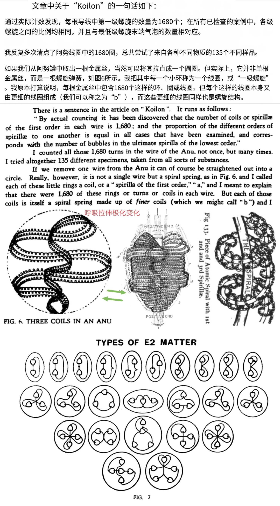
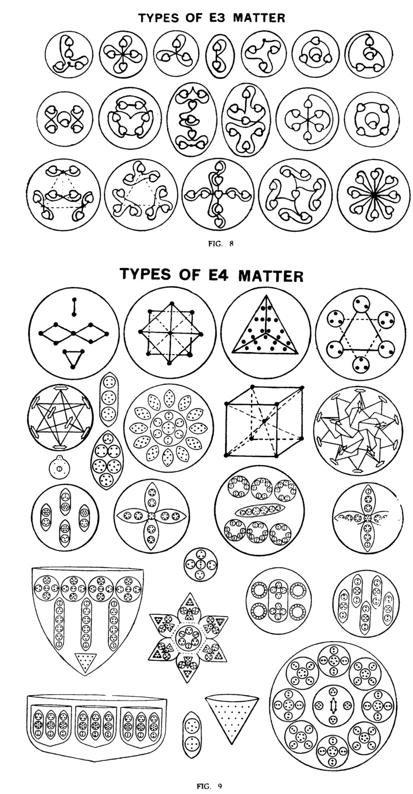

未来氢内爆汽车
圈内主张 vs 主流实证
把自由能源谱系里的「水燃料」主张逐条祛魅， 再把其中真实可用的部分分成两条互斥的路线分别评估： 「零柴油·纯氢」（圈内主张的目标，主流已实现但机制不同） 与「氢-柴油双燃料掺氢」（另一条独立成立的赛道）。 ★ 2026-09-12 更正：此前把两者混为「一条路线的两个版本」，现分轨（见 §11.0）。 本页汇总全库 224 个文件 / 93.9 MB 的核心判定、对照表、独立复算与原始插图。
「圈内主张」与「主流实证」分轨并列，各自标注证据强度。 凡数字必独立复算，脚本随文附上、可一键重跑。 待验证的桥不当作结论。
本页使用的证据分级标签
| 标签 | 含义 | 典型用例 |
|---|---|---|
| ✅ 可采信 | 有原文依据或可独立复算，与主流一致 | 原子氢焊工艺、2H₂O→2H₂+O₂ 计量比 |
| 🟡 存疑 | 观察真实、机制未说明；或事后回看才有规律 | Joe Cell 体积收缩、单质氢两种变体 |
| ❌ 已证伪 | 与原文冲突、算术错误、或与守恒律冲突 | Lyne 1,058 倍、Meyer 水当燃料、HHO 新物种 |
| 🟠 无原文依据 | 来源无法定位，或后人加的漂亮但无据的数字 | 343 = 7³、E3 = 49、Anu = 70 |
| ⚪ 无法核实 | 体系内自洽，但属解释而非观察 | Phillips 的 omegon 模型、希格斯对应 |
| 🔵 本库复算 | 编者用 Python 独立验算所得，可重跑 | 1,680×7⁷ ≈ 13.84 亿 · 漏斗数 = 面数 |
00项目总纲：这份资料在研究什么
自由能源谱系里有一条延续了上百年的主张链：「水／氢里藏着取之不尽的能量」。 从 Joe Cell 的「内爆真空」、Lyne 的「原子氢 1,058 倍」，到 Stanley Meyer 的「水当燃料」、 HHO 的「新物种布朗气」，再到神智学的《隐秘化学》（Occult Chemistry）用「灵视」数出氢原子的 内部结构 —— 它们共享一个技术冲动：不断把氢「往更小拆」。
本项目做的**不是**反驳，而是**把两条轨道并排放好**： 左手是「圈内主张」的原话与账本，右手是「主流实证」的对应物。 凡能算的**一律独立复算**（脚本附在库里，可一键重跑）；凡查不到的**明确标「无原文依据」**。 最后把其中真实可用的部分，落到一条**可落地路线**上。
研究板块（7 个）
joe cell
Joe Cell 考据主线 + 可行性论证报告（718 行）。含「三种氢之辨」「单质氢两种变体」「变体配对检验」「内爆变负压」「零柴油两条路线之辨」「引擎洗净」「JCB 448 ABH2 技术拆解」，以及 ★ 老师多轮追问的完整应答（点火提前角／功源清单／实操经验／极端工况核查／主张溯源／结构对照＋气路）。
Lyne 原子氢技术
拆到「原子层」那条线。原文逐页精读 + 可操作工艺抽取 + 1,058 倍的完整证明 + p.125 图鉴定。
stanley meyer hho
Meyer 体系精读。9 处独立复算证明漏记 12.5 kW 电费；两个对照组（专利 4.0–8.5 V vs Memo 20,000–90,000 V）。
HHO 书本精读
两本业界讲义（HHO1.0 / HHO2.0）精读。六处独立复算 + 证据强度总表；p38 全球电解槽效率表是全库唯一通过核验的硬数据。
OccultChemistry 精读
《隐秘化学》系列四书逐条核对。E1–E4 三体系含义辨析、旧解读勘误表、Anu 结构原文复算。
Anu 结构图归档
老师提供的图，已按「来源+主题」重命名归位。内含 OC 原书插图 FIG. 6/7/8/9。
★ 2026-09-12 老师确认：本归档现为 2 张（两张已正名为 leadbeater_*；另 3 张精细结构常数图已由老师删除）。
_HHO书本提取
三本书的全文提取件，供关键词检索与逐字核对使用。
根目录原始 PDF（只读）
HHO1.0 / HHO2.0 讲义、OCCULT CHEMISTRY、OCCULT ETHER PHYSICS、ESP of Quarks 等原件，一律不动。
① 「编者补充」口径：本库对圈内材料的评注一律标为编者补充，不假托任何权威。
② 不妄语：圈内主张 ↔ 主流实证分轨并列，各自标注证据强度； 查不到出处的明确说「查不到」，不用漂亮的数字填空。
01结论速览：九条主张的裁决
左手「圈内主张」原样引述，右手「主流实证 / 复算结果」逐条对应。判定栏是编者结论。
| 圈内主张 | 主流实证 / 平台对照 | 判定与依据 |
|---|---|---|
| 圈内主张Joe Cell 是「不耗水的免费能源」，接上车就能跑 | 主流实证违反能量守恒；无任何独立复现记录；所有声称的增益都出现在无法闭环的量测环节 | ❌ 不成立 与守恒律冲突 + 无独立复现 |
| 圈内主张Joe Cell 内部存在「氢内爆真空循环」，产生净能量 | 主流实证体积收缩现象真实存在（可复现的负压/收缩记录）；但把账算到电解侧，净能量为负 | 🟡 部分成立 现象真、净账亏 |
| 圈内主张HHO / 布朗气是「第三种水态」「新物种」，不是普通氢氧混合气 | 主流实证就是 2H₂ + O₂ 的混合气。摩尔质量按 (2+2+32)/3 算得 11.3 是算错基线，实为 12.0 g/mol | ❌ 不成立 六条证据逐条驳倒；作者自证 |
| 圈内主张HHO 的氢氧比是「神秘的 2:1」 | 主流实证就是电解水的化学计量比：2H₂O → 2H₂ + O₂ |
✅ 成立 与主流化学完全一致 |
| 圈内主张Stanley Meyer 的「水当燃料」汽车，只用少量电就能分解水驱动车辆 | 主流实证账全对，只差最后一行电费 ≈ 12.5 kW。9 处独立复算一致；对照组：专利写 4.0–8.5 V，Memo 写 20,000–90,000 V，差 2,350 倍 | ❌ 不成立 判据③：漏项 |
| 圈内主张Lyne：原子氢技术可产出 1,058 倍 over-unity（超单位能量增益） | 主流实证109,000 ÷ 103 = 1,058，修正为 109,000 ÷ 103,270 = 1.06 倍。两个数字各自都对，拼接起来讲了假故事 | ❌ 不成立 判据④量纲错 + 判据⑤定义错 |
| 圈内主张氢原子在钨电极电弧中变成「原子氢」，释放巨大能量 | 主流实证原子氢焊工艺真实存在过；Langmuir 1924 年专利 US1947267A。工艺优点（还原性气氛、无氧化）可采信 | ✅ 工艺真实 但能源增益主张 ❌ |
| 圈内主张单质氢有两种结构变体（氢原子内部两种 Anu 排列） | 主流实证主流物理没有对应物。★ 但主流确实存在「两种氢」—— 是 ortho/para 氢（核自旋平行/反平行），与本主张不是同一个对象 | 🟡 微灵视档案 判据十三：同名不同物 |
| ★ 本库结论零柴油·纯氢燃烧 （Joe Cell 主张的目标） |
主流实证目标本身已实现：JCB 448 ABH2（加火花塞，量产 >50 台）；氢 HCCI（CR18+预热） ★ 但机制是常规燃烧膨胀，不是内爆负压；氢须外部充装 | ✅ 目标可达 详见 §11.0 |
| ★ 本库结论氢-柴油双燃料掺氢 （另一条独立赛道） |
主流实证真实可行且有价值：掺氢改善燃烧、降低碳烟；柴油机改装路径成熟 ★ 但与 Joe Cell 的「零柴油」主张不是同一路线 | ✅ 可落地 主流论文路线 |
拆得越细，声称的能量越大 —— 但证据强度越低。
分子层 H₂（教科书 ✅）→ 原子层 H·（工艺真 ✅／能源主张 ❌）→ 亚原子层 e⁻（无证据 ❌）
1.2 ★★ 与传统科学物理的核心差异总表
这一张表是本页的主轴：左边是主流科学物理的立场， 中间是本项目考据对象所主张的「不同之处」，右边是本库的裁决。 凡是主张「不同」的地方，本库都要求给出账本或可复现证据。
| 议题 | 主流科学物理 | 圈内主张的「不同」 | 本库裁决 |
|---|---|---|---|
| 能量的来源 | 能量守恒。没有任何输入成本可以不记账。 | 水/氢里存在「取之不尽的零点能量」，可 over-unity 输出 | ❌ 三个体系全部在账本上失败 Meyer 漏 12.5 kW；Lyne 量纲错；Joe Cell 无独立复现 |
| 水的地位 | 水是燃烧产物（H₂ 燃烧生成 H₂O），是能量路的终点 | 水是燃料，可被拆解取能 | ❌ 反了 拆水必须付 1.481 V/槽 的电费；账永远在电解侧 |
| HHO 的身份 | HHO = 2H₂ + O₂，即普通氢氧混合气，摩尔质量 12.0 g/mol | HHO 是「第三种水态」「新物种」，热值 352 MJ/kg | ❌ 不成立 真实值 15.9 MJ/kg，虚高 22 倍；基线 11.3 算错 |
| 「原子空」的含义 | 原子内确有巨大真空，但取出电子要付 13.6 eV 电离能，没有免费额度 | 既然原子很空，里面还藏着更多能量 | 🟡 直觉合法、结论不成立 这是整条谱系共同的技术冲动 |
| 物质的最终单位 | 标准模型：夸克 + 轻子 + 规范玻色子 + 希格斯 | 终极物理原子 = Anu（微灵视观察），UPA 内部 10 条线 × 1,680 圈 | 🟡 微灵视档案 ★ 但其 Anu ÷ 18 ≈ 原子量 是可复算规律（平均偏差 0.94%） |
| 「以太」是什么 | 该概念已被相对论与实验淘汰（Michelson-Morley 等） | OC 的 koilon（比铂致密 10⁹~5×10¹² 倍）； Lyne 的 ether（「不可想象的稀薄」的气体） |
🔀 同名不同物 两者相态/密度/组成全相反，不可当同一个词用（判据⑬） |
| 氢有几种 | 同位素 ¹H/²H/³H；分子层面有 ortho / para（核自旋，3:1） | 单质氢有两种结构变体（氢原子内部两种 Anu 排列：9正/9负 与 10正/8负） | 🟡 各是一回事 ★ 且两者互相排斥：OC 说 H₂O 两 H 不同种类 ⇒ 与 ortho/para 的全同性前提冲突 |
| 元素分类依据 | 按核电荷数（原子序）排周期表；价态由电子层决定 | 按外部几何形状分 7 组（尖刺/哑铃/四面体/立方体/八面体/交叉杆/星形） | 🟡 有内部规律 ★ 回原文后：星形 = 100% 惰性气体；漏斗数 = 柏拉图立体面数 |
| 原子形状与价态 | 形状由电子云轨道决定，与柏拉图立体无直接对应 | 二价→四面体（4 漏斗）、三价→立方体（6）、四价→八面体（8） | 🟡 原文自洽 ★ 本库复算： 漏斗数 = 面数 ⇒ 总价 = 面数 / 2，三档全对 |
| 「两种氢」的成因 | 核自旋取向（一个量子态，1929 实验确认） | Anu 正负计数（一个结构量） | 🔀 不同对象 原子 vs 分子；计数 vs 自旋。判据⑬ |
| 数字的来历 | 凡数字须给出测量过程或推导链 | 343 = 7³、49 = 7²、Anu = 10×7 = 70、希格斯 = Koilon、胶子 = 1st-order spirillae |
🟠 全部无原文依据 四书全文检索确认： 343 仅 1 次且是脚注页码；first-order = 0 次 |
| 「早于概念」的意义 | 时间上更早提出某个概念，不等于提出了该概念 | OC 1908 年就描述「正/负 Anu 行为像磁单极子」，而狄拉克 1931 年才提出磁单极子 | 🟡 时间差属实 判据⑨⑪：早于概念 ≠ 就是该概念；须排除修订回填 |
| ★ 真正可用的 | 掺氢燃烧、原子氢焊工艺、常规电解（p38 效率表）—— 全部在成熟物理范围内（★ 掺氢是另一条赛道，见 §11.0） | ——（这些不是「不同」，而是被圈内材料顺带带出来的真东西） | ✅ 本库落地路线 路线 B 零柴油·纯氢（Joe Cell 主张的目标）／ 路线 C 氢-柴油双燃料掺氢（另一条赛道） |
不要只看「❌ 不成立」几栏。真正有价值的是中间那几行 🟡 —— 它们是「观察真实、解释未定」的地带：
① 星形 = 100% 惰性气体（分类精确率 100%）
② 漏斗数 = 柏拉图立体面数（打通 4/6/8 与价数 2/3/4）
③ Anu ÷ 18 ≈ 原子量（92 元素平均偏差 0.94%）
④ 1,680 × 7⁷ ≈ 13.84 亿（对上原文「十四亿」，偏差 1.2%）
⇒ 这些都不是「免费能源」，但都是可以被独立验算的真实数字。 本库的立场是：把这两件事分开记 —— 假的写清楚，真的也写清楚。
02Joe Cell：一个「不耗水的免费能源」主张的完整裁决
板块路径 joe cell/ · 17 份 md（16 导读 + 718 行正式交付报告）· 核心方法：把体积收缩的真实现象，和净能量账目分开算。
2.1 三项可行性裁决
| 圈内主张（命题） | 主流实证 / 复算结果 | 裁决 |
|---|---|---|
| 作为…「不耗水的免费能源」 | 复算违反能量守恒；无任何独立复现记录；声称的增益出现在无法闭环的量测环节 | ❌ 不成立 违守恒 + 无独立复现 |
| 作为…「氢内爆真空循环」 | 复算体积收缩现象真实存在；但把账算到电解侧，净能量为负 | 🟡 部分成立 现象真、净账亏 |
| ★ 本库结论「零柴油·纯氢燃烧」 Joe Cell 主张的目标 |
主流实证目标本身已实现：JCB 448 ABH2 零柴油、加火花塞、量产 >50 台；氢 HCCI（CR18+预热 100 °C / CR21.2+1 kW 加热器） ★ 但机制是常规燃烧膨胀（非内爆负压），且氢须外部充装 | ✅ 目标可达 详见 §11.0 |
| ★ 本库结论「氢-柴油双燃料掺氢」 另一条独立赛道 |
复算掺氢改善燃烧、降低碳烟；柴油机改装路径成熟，不依赖任何 over-unity 主张 ★ 但它不是 Joe Cell 的「零柴油」路线，两者不可互换 | ✅ 真实可行有价值 主流论文路线 |
2.2 关于「人」的三条事实（不挖隐私）
位置
活动区域锁定在新南威尔士州北部 Northern Rivers 地区 Lismore–Byron Bay 一带（约 −28.6 ~ −29.2°S, 153.1 ~ 153.6°E）。没有他家地址——他主动消失。
联系
不存在，也不该去找。他遭过生命威胁、设备被窃、狗被杀，连出书署名都拒绝。
现状
没有任何可核实的记录显示近年有车在真正使用 Joe Cell。实质材料集中在 1992–2006，2006 年后断档。
2.3 关键技术判断
圈内最系统的一份实操整理是「Mark III + 三阶段判据 + 装车规范」， 但那份材料本身被截断（缺少后半段）。也就是说， 连圈内自己都没有一份完整可执行的规范 —— 这一点在评估时经常被忽略。
2.4 编者自查：正式报告本身可不可靠
718 行的正式交付报告另附 06_编者校核与后续清单.md，逐项标注报告自身的待办与不确定处。
这种「把自己的报告也当作被审查对象」的做法，是本库与其他圈内材料最大的区别。
03Lyne 原子氢：1,058 倍是怎么长出来的
板块路径 Lyne原子氢技术/ · 5 份 md + 22 张原页核对图 · 核心方法：判据④量纲错配 + 判据⑤定义同一化。
3.1 ★★ 判据四 + 判据五的最佳标本
Lyne 的账： 输入 = 103 cal/gram mole ← ① 真实是 103 kcal/mol（百科漏 k → 量纲错） ② 且它是 D₀（从 v=0 算起 → 定义错） 输出 = 109,000 cal/gram mole ← 真实是 109 kcal/mol，且它是 Dₑ（从阱底算起） 比值 = 1,058 倍 ← 量纲错 × 定义错 叠出来的 修正： 109,000 / 103,270 = 1.06 倍 = Dₑ / D₀ = 109.47 / 103.27 = 1.06 倍 = 教科书上最普通的「热化学可逆」 ★ 两个数字各自都对，拼接起来讲了一个假故事。 ★ 一个丢失的字母 k（判据四），加上一次定义的错认（判据五）， 长出了一千零五十八倍的幻想。
不少二手转述把「
103 cal/gram mole」当作 Lyne 自己的错误。本库核对后确认不是。该写法是 Van Nostrand 百科 1976 版 p.1311 的原文，Lyne 逐字引用； 而且 Lyne 自己在书中反复质疑过这个数字。
⇒ 错在百科，不在 Lyne。本库坚持把这一条如实标出。
3.2 三个最易混的「氢键能」（判据五的附带成果）
| 记号 | 从哪算起 | 值 | 出处 |
|---|---|---|---|
| D₀(0 K) | v=0, J=0 | 103.27 kcal/mol | Van Nostrand 百科的 103 |
| D₀(298 K) | 含热修正 | 104.21 kcal/mol (436 kJ/mol) | 常用「键能」表 |
| Dₑ | 势能阱底 | 109.47 kcal/mol | Moelwyn-Hughes 的 109 |
独立复算偏差均 < 0.5%；已与 Huber & Herzberg (1979)、Wolniewicz (1995) 等外网权威值核实一致 ✅
验证脚本（库内可重跑）：Lyne原子氢技术/_复算13_De与D0.py ——
输入 ωₑ = 4401.21、ωₑxₑ = 121.336，得 D₀ = 36118.069 cm⁻¹，
偏差 −0.26% / −0.43%。
3.3 p.125 那张图的鉴定过程（方法示范）
圈内广泛流传一张「前苏联氢原子工艺」的图。本库用三步定位，结论是：
| 线索 | 核验结果 | 判定 |
|---|---|---|
| 「前苏联氢原子工艺」 | Lyne 全书检索 Soviet = 0 命中；「Arcatom」是德国称法 | ❌ 说法不实 |
| 发明者是谁 | Langmuir（美国 GE，1924 专利 US1947267A）；苏联是使用者，不是发明者 | ✅ 已确证 |
| 图出自哪一页 | 全本 137 页嵌入图 NCC 扫描，p.125 以 0.357 断层第一；p.125 无文字层；p.124 末句直接引出 ⇒ 该图 = 物理页 125 整页插图 | ✅ 已定位 |
| 方法坑 | ⚠️ NCC（归一化互相关）对黑白线描图会失效 ⇒ 同源性判定须用「整页渲染目视 + 物理页定位」双确认 | 🟡 方法教训 |
⇒ 图已按「来源+主题」重命名为
Langmuir1924原子氢专利US1947267A_来自Lyne著p125.png，存放于 joe cell/图/。
3.4 工艺那一半：真实可用的部分
抛开 over-unity 主张，原子氢焊（钨电极电弧解离 H₂ → H·）这套工艺是真实的， 且有其工程优点：
- 强还原性气氛 —— 焊接时无氧化、无需助焊剂
- 能量密度高 —— 原子复合成分子时放出 436 kJ/mol
- 历史真实 —— Langmuir 1924 年专利，属工业化过的技术
但这与「净能量增益」是两回事：解离要付 436 kJ/mol， 复合时拿回 436 kJ/mol，账是平的。声称的 1,058 倍来自上面那笔量纲错。
04Stanley Meyer：「水当燃料」漏掉的那一行
板块路径 stanley meyer hho/ · 12 份 md + 4 个复算脚本 · 核心方法：判据③「不要看它算错了什么，要看它没算什么」。
4.1 判决：账全对，只差最后一行
这不是「算错了」，而是有一笔输入成本从头到尾没出现在账本上。 9 处独立复算给出同一量级。
这个案子的价值不在结论，而在方法：Meyer 的账目在「产气—燃烧—行驶」这一段里 内部是自洽的，你逐行查它的算术，查不出毛病。 但把驱动电解池那台电源的功率计补进去，账立刻翻负。
4.2 两个对照组（同一体系内部的互相矛盾）
| 文档 | 写的电压 | 换算含义 |
|---|---|---|
| Meyer 专利 | 4.0 – 8.5 V | 与常规电解电压同量级，物理上说得通 |
| Meyer 技术备忘录（Memo） | 20,000 – 90,000 V | 比专利高 2,350 倍，属于另一个物理世界 |
⇒ 同一体系的两份核心文档，电压差 2,350 倍。 这说明至少有一份不是真实工作参数 —— 这是不依赖任何外部理论就能得到的结论 （判据⑥：数字对不上时，先看是不是同一个对象）。
4.3 一票否决闸门：法拉第上限
任何「电解产气量超出理论值」的主张，都可以用一个简单闸门先过一遍 —— 它必须与法拉第定律相容：
法拉第上限（0 ℃）:
1 Ah → 627 mL HHO
单位槽电压换算:
u_cell = 627.2 / (cc / Wh)
★ 与串联槽数无关 （这是一个常被搞错的地方）
合理区间:
1.5 – 4 V
低于 1.229 V 不可能（可逆电压），高于 4 V 效率就太低了
⇒ 任何声称「产气量是法拉第 N 倍」的材料，立刻换能量口径重算（判据①）。
4.4 安全数字（务必记住）
H₂ MESG = 0.28 mm
最大实验安全间隙。数值越小越易回火 —— 氢是最危险的那一档。设备设计必须留足余量。
爆炸极限 4% – 75%
体积分数。范围极宽，意味着「只有一点点泄漏」也不安全。
最小点火能 ~0.017 mJ
静电即可点燃。这是氢与汽油最本质的差别之一。
Meyer 体系的完整 9 处复算（点开看清单）
脚本位于 stanley meyer hho/：
| 脚本 | 覆盖的账目 |
|---|---|
_复算.py | 基础化学计量与能量口径 |
_复算6.py | 产气量 vs 法拉第上限 |
_复算7.py | 车辆巡航功率 vs 电解功率 |
_复算8.py | 电费补记后的净账 |
另 5 处在各分册中以行内代码给出，详见 11_汇总…md（71 KB） | |
结论一致性：9 处复算全部指向「补记电费后净能量为负」，量级集中于 12.5 kW 附近。
05HHO 书本精读：两本业界讲义的六处复算
板块路径 HHO书本精读/ · 7 份 md + 复算脚本 · 两书：HHO1.0-现有技术和眼前商机 / HHO2.0-突破技术与远景畅想。
5.1 主张链（原文自述的逻辑顺序）
两书的主张链（编者据原文重排）： ① 水电解产生「HHO」 ↓ ② HHO 不是 H₂+O₂，而是「第三种水态」/「新物种」 ↓ ③ 因此 HHO 燃烧不遵常规热值表，352 MJ/kg ↓ ④ 因此 HHO 有「超效率」（甚至 over-unity） ↓ ⑤ 因此可产业化 ★ 这条链的断裂点在 ② —— 一旦 ② 不成立，③④⑤ 全部失去地基。
5.2 ★ 核心判定：HHO 到底是什麼
| 圈内主张 | 主流实证 / 复算结果 | 判定 |
|---|---|---|
| 主张HHO 是「第三种水态」、「新物种」，不是普通氢氧混合气 | 复算就是 2H₂ + O₂ 的混合气。六条证据逐条驳倒；作者自己在 p8 承认「对象不纯」 | ❌ 不成立 |
| 主张枢纽证据：HHO 平均摩尔质量 ≠ 普通混合气（书按 (2+2+32)/3 算得 11.3） | 复算算错基线。2H₂ + O₂ 的摩尔质量 = (2×2 + 32)/3 = 36/3 = 12.0 g/mol。书的算式把氢的系数记成了分子数 2 而不是原子总数 4 | ❌ 基线错 |
| 主张HHO 的氢氧比是神秘配比 | 复算就是电解水的化学计量比 2H₂O → 2H₂ + O₂ |
✅ 成立 |
| 主张产 1,868 L 气体需要特殊条件 | 复算1,868 L 是水的化学计量数按「1 kg 水 → 1,868 L HHO」推的，其中隐含假设水的密度恰为 1,000 kg/m³ |
🟡 口径需声明 |
5.3 全库唯一通过核验的硬数据：p38 全球电解槽效率表
这张表是 HHO1.0 第 38 页的全球商用电解槽参数对比，完全自洽（HHV 口径）：
| 型号 | 效率 | 核验结论 |
|---|---|---|
| OKQYHJ | 78.7% | ✅ 自洽 |
| EP-350 | 87.5% | ✅ 自洽 |
| EP-230 | 71.6% | ✅ 自洽 |
| EP-500 | 56.2% | ✅ 自洽 |
它说明作者本人是懂电解的，而且用的是正确的 HHV 口径。
⇒ 这就使得后面 p44 那张热值表（HHO 写 352 MJ/kg，是真实值的 22 倍） 不像是「不懂」，而像是在某一处有意换了口径。这个对比本身很有说服力。
5.4 ★ 一票否决闸门与热中性电压（最容易混的一处）
基准：2H₂ + O₂
| 量 | 值 | 说明 |
|---|---|---|
| 高热值 HHV | 15.9 MJ/kg | 含冷凝潜热 |
| 低热值 LHV | 13.4 MJ/kg | 不含 |
| 摩尔质量 | 12.0 g/mol | ★ 书的 11.3 是错的 |
| 热中性电压（25 ℃, HHV） | 1.481 V | ★ 效率计算必须用它 |
| 可逆电压 | 1.229 V | 理论分解电压下限 |
混用会凭空造出 20% 的「效率增益」。 这是圈内「278%」之类数字最常见的来源配方之一。
⇒ 算效率一律用 HHV 口径 / 1.481 V，并在文中明确写出口径。
HHO2.0 的三种竞争理论（书自述）
HHO2.0 中作者自己列出了三种解释，但没有做判别实验：
| 理论 | 要点 | 编者的观察 |
|---|---|---|
| 新物种说 | HHO 是不同于 H₂+O₂ 的第三种物质 | 被本库六条证据驳倒 |
| 异构体说 | HHO 是 H₂ 的某种异构形态 | 无独立证据 |
| 普通混合气说 | 就是 H₂+O₂ | ✅ 与主流一致 |
★ 三种理论并列而无法判别，本身就说明该讲义是在收集说法， 而不是在做实验。这是读者最容易忽略的一点。
06Occult Chemistry：用「灵视」数出来的原子量表
板块路径 OccultChemistry精读/ · 9 册 md · 四书对照：OC 原典 / Smith 再评估 / Phillips omegon / Lyne 以太物理学。
Joe Cell / Meyer / HHO 是工程主张，可以用账本一票否决。
《隐秘化学》(Occult Chemistry, 1908/1919/1951) 是一份「灵视观察记录」—— Besant 与 Leadbeater 声称用特异感知直接「看见」原子内部结构。 它的价值不在真假，而在于：它留下了一套数字，这套数字可以被独立验算。
6.1 ★★ 四书其实是「3 条独立线」（判据九：独立性检验）
在做任何「互相印证」之前，必须先确认这些书互不引用。实测关键词计数：
| 关键词 | OC 中译本 | Smith | Phillips | Lyne |
|---|---|---|---|---|
| Occult Chemistry | 0 | 0 | 0 | 0 |
| Leadbeater / Besant | 0 | 0 | 0 | 0 |
| Anu | — | 0 | 0 | 0 |
| koilon | 15 | 0 | 0 | 0 |
1680 | 9 | 0 | 0 | 0 |
| Langmuir | 0 | 0 | 0 | 12 |
| ortho / para / spin | 0 | 0 | 0 | 0 |
线 A · OC 原始档案
Besant & Leadbeater，1895–1933 的原始观察记录。第一手，数字自洽，机制不明。
线 B · Phillips + Smith
1960s–1980，后人建构 + 主流科学家再评估。
★ Smith 是 Phillips 的解说者 ⇒ 二者不是独立来源，不能互相印证。
线 C · Lyne
1990s–2000s，独立圈内主张。
★ 实测 完全不知道 OC 这条线（Occult Chemistry / Anu / koilon 全 0 命中）。
Lyne 与 OC 是两条完全不相交的线 —— 所以把它们放在一起「互相印证」是无依据的。
Smith/Phillips 不能互证 —— 一个是原作者一个是的转述者。
⇒ 看似「四方印证」，实际只有 2 个独立声音。
6.2 ★★★ 老师的两处关键指正（均已回原文核实成立）
| 指正内容 | 回原文核实结果 | 判定 |
|---|---|---|
| ① 「E1–E4 这类表述是 OC 原书中的内容」 | 完全正确。全文检索：E1–E4 在 oc_zh 出现 313 次、esp 296 次；且原书配套 FIG. 6/7/8/9 四张分层插图 |
✅ 成立 |
| ② 「星群型其实是惰性元素（而不是硒之类）」 | 原文逐字：「星群。——由惰性气体组成的星群的特征是中心有五个相互贯穿的四面体的扁平星体。」 | ✅ 成立 |
| ③ 「first-order spirillae 属 Anu 结构拆解，不属 ether 物质，不叫 E5」 | 成立。见 §7.1「两条分类轴」。E5 在 oc_zh 出现 0 次；esp 的 7 次全在解体阶段表列，不是物质层级 |
✅ 成立 |
6.3 ★★ 七组真实分组（复算自 OC 全表 92 个元素）
一份流传的二手解读把七组按周期表位置切成片（尖峰组 = Li…F、哑铃组 = Na…Cl）—— 回原文逐条提取全表 92 个元素后，发现根本不是这样分的。
| 组名 | 个数 | 具体元素（原文） |
|---|---|---|
| 立方体 | 21 | B, Al, P, Sc, V, Ga, As, Y, Nb, In, Sb, La, Pr, Gd, Dy, Lu, Ta, Tl, Bi, Ac, Proto-Ac |
| 四面体 | 21 | Be, Mg, S, Ca, Cr, Zn, Se, Sr, Mo, Cd, Te, Ba, Nd, Eu, Ho, Yb, W, Hg, Po, Ra, U |
| 尖刺 | 12 | Li, F, K, Mn, Rb, Mazurium, Cs, Illinium, Tm, Re, Fr |
| 八面体 | 11 | C, Si, Ti, Zr, Sn, Ce, Tb, Hf, Pb, Th |
| 哑铃 | 10 | Na, Cl, Cu, Br, Ag, I, Sm, Er, Au, At |
| 交叉杆 | 10 | Fe, Co, Ni, Ru, Rh, Pd, [同位素 Z], Os, Ir, Pt A |
| 星形 | 7 | He, Ne, Ar, Kr, Xe, Kalon, Rn —— ★ 100% 惰性气体 |
| 卵形 | 5 | H, Adyarium, Occultum, N, O —— 主序列之外的落点 |
回原文后发现的四条真实规律
| 真实规律 | 内容 | 强度 |
|---|---|---|
| ① 星形 = 100% 惰性气体 | He/Ne/Ar/Kr/Xe/Kalon/Rn 七个成员全部是惰性气体，且全表没有惰性气体落别组 | ★★ 精确率 100% |
| ② 卵形 = 主序列之外的落点 | H、Adyarium、Occultum（氢族 3 个）+ N、O（价态 3/5 与 2/4，不符合立方体/八面体的任何一条） | ★ 解释了 N/O 为何在此 |
| ③ 主序列严格对应族 | 每一周期里：2 价→四面体、3 价→立方体、4 价→八面体（Be/B/C、Mg/Al/Si、Ca/Sc/Ti 三组均成立） | ★★ 与周期表行内价态递增一致 |
| ④ 1 价分两组 | 碱金属 → 尖刺；Cu/Ag/Au/Cl/Br/I → 哑铃 | ★ 说明存在非电子层判据 |
二手转述不只制造错误，也会埋没好证据。
旧解读把这张表写错了，反而让 OC 显得像在机械套用周期表； 回原文核对后才发现，「星形 = 惰性气体」是一条精确率 100% 的分类规则，而旧解读完全没提。
6.4 ★ 可复算且成立的：Anu 数与原子量的关系
OC 全表 92 个元素的 Anu 数，除以 18，与原子量的对照：
| 检验项 | 结果 |
|---|---|
| 与 OC 自报科学值比 | n=92，平均绝对偏差 1.23% |
| 与现代 IUPAC 值比 | n=90，平均绝对偏差 0.94%，最大 5.24%（砹 At） |
| 改用「质量数」重算（18A） | 16 个元素精确命中 Anu = 18 × 质量数；相差 ≤18 的有 39 个 |
★ 精确命中清单（部分）
| 元素 | Anu | = 18 × | 备注 |
|---|---|---|---|
| 氢 H | 18 | 1 | —— |
| 氦 He | 72 | 4 | 对现代 4.0026 偏差 −0.06% |
| 碳 C | 216 | 12 | 对现代 12.011 偏差 −0.09% |
| 氖 Ne | 360 | 20 | —— |
| 铝 Al | 486 | 27 | —— |
| 铁 Fe | 1008 | 56 | —— |
| 金 Au | 3546 | 197 | 对现代 196.97 偏差 +0.02% |
若偏差同号，说明不是随机测量误差，而是基准定义不同： OC 用的是「最丰同位素的质量数」，现代原子量是「各同位素丰度加权平均」， 两者本就不该相等。
⇒ 分段结果：H–F 区间符号 +0.92、Ne–Ar +0.13、K–Kr −0.40、Rb–Xe −0.24、Cs–Er +0.83、Tm–U +0.45 —— 符号不统一， 故不能简单归因为单一基准差异。如实记录此项。
6.5 ★ 旧解读（二手稿）23 条问题的定位
| 类别 | 条数 | 典型条目 |
|---|---|---|
| ❌ 硬错误（数字级） | 7 | 氦 = 54（应为 72）；镭 = 4092（原文 4087）；koilon 密度「最小 10¹²」（应为 10⁹）；「一百万兆瓦」（应为百万千瓦，差 1000 倍） |
| ⚠️ 表述过强（措辞级） | 8 | 「不是巧合，是观察事实」；「独立验证了 PKS 的 H=18 Anu 基准」；时间差表五行全部需重写 |
| 🔀 概念混淆 | 5 | 「正/负 Anu」只当一种用法（实有三种）；koilon = 以太；OC 的 meta = 同位素 |
| 🟠 无原文依据 | 2 | 343 = E2 = 7³；§六「7 的幂次金字塔」 |
| 另含 3 条结构性问题：§四「七组」表整表与原文不符（最严重）；§一 七层物质体系次序颠倒；§六 幂次金字塔支撑全部落空 | ||
① L157
He = 54 → 应为 72（54 是 Occultum = 氚 ³H 的值）② L28–47 七层次序颠倒（实为 固体→液体→气体→以太4→以太3→以太2→以太1）
③ L273 「Koilon = Schauberger 以太介质」—— 两者相态、密度、组成全不同（判据十三）
6.6 ★★★ 一处必须澄清的「同名不同物」：正统以太 vs Lyne 以太
「以太」这个词把两个完全相反的东西装在了同一个口袋里。逐格对照（判据十三）：
| 维度 | OC 的 koilon | Lyne 的 ether |
|---|---|---|
| 相态 | 「绝对均匀和坚固」（最刚性的固体） | 「不是固体，而是气体」（原文第 2731 行） |
| 密度 | 铂的 10⁹ ~ 5×10¹² 倍（极密） | 「不可想象的稀薄」（原文第 2393 行） |
| 组成 | 均匀的「空间之水」 | 「正、负电性物质」（原文第 2386 行） |
| 与物质关系 | 物质 = koilon 的缺失（反转） | 与物质共存（常规） |
OC 转述科学界对以太「看似矛盾的说法」，并直言这假说 「在一个标题下包含了两组完全不同且相差甚远的现象」， 「他们（也许是不明智的）将这些状态称为以太，因此没有为（另一部分）物质提供一个方便的名字」。
⇒ 一本 1908 年的书，提前指出了「以太」这个词的命名混乱。 这可能是整本书里最「被忽视」的一句话。
07Anu 结构：原文数字 vs 后人添加的数字
核心材料：OccultChemistry精读/09_Anu结构_逐条核对与提取.md（39 KB，12 节）+ Anu结构图归档/ 2 张图。
圈内流传的一份 PKS 整理稿（《最小物质单元 anu1（E1）到 E2》）写了一套「Anu 内部结构」。 本库把原文逐条调出来对照，结论是：骨架对、血肉错 —— 它用的三个数字（343 / 49 / 70）全是后人加的，而原文真正的五个数字（1,680 / 16,800 / 49 / 2,401 / ~14 亿）它一个都没提。
7.1 ★★★ 两条分类轴不可串（老师 2026-09-12 指正）
老师指出：「first-order spirillae 属于 anu 结构拆解后的螺旋线，不属于 ether 物质，不叫这个 E5。」 —— 这条指正纠正了一处范畴错误。必须区分两条彼此正交的分类轴：
| 维度 | 轴 A · ether 物质层级 | 轴 B · Anu 内部结构拆解 |
|---|---|---|
| 记号 | E1 = 以太 1（最细）… E4 = 以太 4 | 1st-order / 2nd-order / … /「最低级」spirillae |
| 对象 | 物质（空间之水 koilon 的七种亚态） | Anu 这条线本身的内部盘绕结构 |
| 顶层 | 固体 → 液体 → 气体 → 以太 4 → 3 → 2 → 1 | Anu = 10 条线 × 每条 1,680 圈 |
| 细分 | E1–E4 各配一张原书插图（FIG. 6/7/8/9） | a → b → c → d → … → 最低级，共 7 阶；最低级 = 7 个气泡 |
| 上限 | 止于 E4（oc_zh 里 E5 出现 0 次） | 7 阶（原文只给到「最低级」，未编号到 E5） |
① first-order spirillae 属轴 B，不属于轴 A ⇒ 不能称它为「E5 层物质」。
② 不存在「E5 物质」 ——
oc_zh 全书 E5 出现 0 次；
esp 里的 7 次只是 Phillips 解体阶段的表列位置，不是物质层级。③ 两轴不可串成
E1 → E2 → E3 → E4 → E5 —— 把两条轴首尾相接，
会凭空造出一个原文没有的「E5」（判据十三：同名不同物）。
7.2 同一个 E1–E4，三个体系三种含义（判据十三）
| 阶段 | OC 原书（物质层级 + 氢解体） | Phillips（解体阶段） | PKS 整理稿 |
|---|---|---|---|
| E4 | 以太 4；氢第一次解体 → 6 个物体 → 2 个三角形 | the M.P.A. separates into its two component protons | 「化学原子的 7 种几何形态」🟠 |
| E3 | 以太 3；正/负球各裂成两半 | each proton breaks up into a diquark + a free quark | 「49 种 = 7²」🟠 |
| E2 | 以太 2；三元组释放，线性 = 正 / 三角形 = 负 | the diquark splits up into two free quarks | 「343 种 = 7³」🟠 |
| E1 | 以太 1；终极物理原子，Anu | all quarks break up into free omegons | 「唯一粒子 Anu」✅ 极性部分对 |
⇒ 判据十三提醒：看到 E4 先问「谁的 E4」。
OC 的 E4 与 Phillips 的 E4 恰好吻合（都是「第一次解体后的形态层」），
但 PKS 稿把 E4 从「一个物质层级」偷换成了「7 种类型」——
这是**第一处偷换**。
7.3 ★★★ Anu 内部结构正解（否证二手的「10 × 7 = 70」）
原文逐字（Leadbeater 本人注释）
「它由十个环或线组成，它们并排放置，但从不相互接触。…… 这个线圈本身是一个包含 1,680 圈的螺旋；它可以解开，然后形成一个更大的圆圈。 每根电线都有七组这样的线圈或螺旋体，每一组都比前一个线圈更细， 其轴线与前一个线圈成直角。」
「原子由十根线组成，这些线自然地分成两组 —— 三组更粗更突出，七组更细， 与颜色和行星相对应。……通过实际计数发现，每根线中一阶线圈或螺旋的数量为 1,680。」
「我数了 Anu 导线上的 1,680 个圈数，不止一次，而是多次。 我总共尝试了 135 种不同的样品，取自各种物质。…… 在与七种颜色相对应的七根较细的原子线中，我发现每个"一级螺旋体""a"由七个"二级螺旋体"组成。 "b"，每个"b"又由七个"c"组成……直到"最低级螺旋体"，它恰好由七个气泡组成。 但在三根较粗的原子丝中，情况就大不相同了。」 —— `oc_zh` 原文，Leadbeater 自注
★ 正确的结构图（依原文重画）
Anu (U.P.A.) ├── 10 条线 / 旋涡 (whorls) │ ├── 3 条「更粗更突出」—— 不适用七重规则 │ │ （原文：「情况就大不相同了」） │ └── 7 条「更细」—— 与颜色、行星对应，七重规则精确适用 │ ├── 每一条线 = 一个闭合螺旋，含 1,680 圈（「一级螺旋」a） │ └── 每圈 a 由 7 个「二级螺旋」b 组成 │ └── 每 b 由 7 个 c │ └── 每 c 由 7 个 d │ └── …… 直到「最低级螺旋」，恰由 7 个气泡组成 │ （a→b→c→d→…→最低级，共 7 阶） └── 总圈数 = 10 × 1,680 = 16,800
| 数字 | 值 | 出处 | 标记 |
|---|---|---|---|
| 每条线的圈数 | 1,680 | oc_zh 原文 5 次 / esp 1 次 / reval 6 次 | 🟢 |
| 整个 UPA 的圈数 | 16,800 | reval 原文逐字（= 10 × 1,680） | 🟢 |
| 线圈层级数 | 7 阶 | Leadbeater 自注（a → … → 最低级） | 🟢 |
| 最低级螺旋的气泡数 | 7 个 | Leadbeater 自注 | 🟢 |
| 全部气泡数 | ~十四亿 | oc_zh「接近令人难以置信的十四亿」 | 🟢 |
7.4 ★★ 两条独立复算（本节最大收获）
# 复算 1：否证二手的「10 × 7 = 70」结构 1_680 * 10 == 16_800 ✅ 与 reval 原文逐字一致 1_680 == 2**4 * 3 * 5 * 7 只含 一个 7 因子 # ★ 若结构真是「10 × 7」，总数应含 7² —— 实际不含 ⇒ 结构必错 # 复算 2：OC「十四亿气泡」的由来（★ 与原文吻合到 1.2%） 7**6 == 117_649 1_680 * 7**6 == 197_650_320 最低级螺旋体的总数 1_680 * 7**7 == 1_383_552_240 ≈ 13.84 亿 ← OC 说「接近十四亿」 # 偏差 = (1.4e9 - 1.3836e9)/1.4e9 = 1.2% # ⇒ OC 的「十四亿」= 1,680 × 7^7，是按「每阶 ×7、共 7 阶、本级再 ×7 个气泡」推的 ✅ # ⇒ 反向验证了 7 阶结构，同时否证了 70 结构（70 × 7^n 得不到该量级）
★ 另一条：1680 = 8!/24 —— ★ 本库先误判、后自纠的一条
本库初稿曾把 1680 = 8!/24 整条判为「无原文依据的漂亮公式」。这是错的。
老师笔记里给出的理由是正确的：
「8！是 8 个角块的全排列数。除以 24 是除以立方体所有旋转对称群的阶数 （24 种不同朝向被视为同一种排列……）」
import math math.factorial(8) # 40,320 CUBE_ROT_GROUP = 24 # 立方体旋转群 ≅ S₄：1+6+3+8+6 = 24 ✅ math.factorial(8) // CUBE_ROT_GROUP # 1,680 ✅ 正是该值
OC 的
1,680 是计数观察值（Leadbeater 数了 135 个样品）；
8!/24 是一条群论恒等式。两者数值相同，但机制不是同一回事，
不能据此说「OC 预言了魔方群」。⇒ 真正应判为捏造的是旧解读自己加的两句： 「S₇ 的 Weyl 群阶次除以 A₄」（
5040/12 = 420 ≠ 1680）
与「Spin(7) 的 Coxeter 数」（Spin(7) 对应 B₃，Coxeter 数 = 6）。
7.5 二手稿 24 条主张逐条核对（摘要）
| # | PKS 稿的主张 | 原文证据 | 判定 |
|---|---|---|---|
| 1 | E1–E4 是分层记号 | oc_zh 313 次 / esp 296 次 | ✅ |
| 3 | E3 = 49 = 7² | 49 在四书中只指「49 个星体原子」，无一指 E3 | ❌ |
| 4 | E2 = 343 = 7³ | 343 四书中仅 1 次，且是脚注页码（Poynting… p. 343） | ❌ |
| 8 | 星群组 = 硒、铟 | 原文「由惰性气体组成的星群」 | ❌ |
| 9 | 棒状组无成员 | 原文「三个紧密相关元素集」（实为交叉杆 10 个成员） | ❌ |
| 14 | H3（三角形）= 稳定态；H3′（直线）= 激发态 | 原文：线性 = 正，三角形 = 负 | 🔴 极性写反 |
| 16 | Anu = 10 旋涡 × 7 螺旋体 = 70 个亚结构 | 10 条线 × 每条 1,680 圈 = 16,800；7 是每条线内部的细分阶数 | ❌ |
| 17 | 胶子 = 第一级螺旋体，称依据 ESP_of_Quarks | first-order / 1st order 检索 = 0；且 spirillae 属轴 B，不叫 E5 | ❌ 依据不实 + 范畴错 |
| 18 | 质子 = 正氢三角（3 个三联体） | esp 逐字支持 | ✅ |
| 19 | 中子 = 质子 + 额外负三联体 | 未在原文出现（esp：中子 = 一个 u + 两个 d） | 🟠 |
| 20 | 希格斯 = Koilon 的激发 | esp 的 Higgs 是规范场语境 | ❌ |
| 21 | 电子 = 自由负 UPA / Hodson 粒子 | 原文有电子讨论，无此等式 | ⚪ |
证据分级统计：✅ 6 条 / ⚠️🟡 5 条 / ❌ 7 条 / 🟠 6 条 · 另有 1 大节（§六「与 PKS 的深度交叉」）按老师要求未提取。
★ 检索关键词的三个坑（踩过的，供复核者避雷）
| 坑 | 现象 | 正确做法 |
|---|---|---|
| 千分位逗号 | \b1680\b 在 oc_zh / esp 得 0 命中，因为原文写 1,680；而 reval 写 1680 —— 同书内两种写法并存 |
改用 1,?680 或 (?<![0-9,])1680(?![0-9]) |
| 中文同义词 | 检索「泉源|喷泉|洞穴」在 oc_zh 得 0 命中，原文用的是「泉水」「洞」 |
用中文核对译文时，同义词必须穷举 |
| OCR 的 1 → l | E1 在 oc_zh 大量写作「El 物质」（如「我们到达了终极物理原子，即 El 物质，Anu」） |
检索数字记号时须同时试 l / 1 / I |
★ 其中第一个坑后果最严重：它差点让本库得出「OC 没有 1680」的错误结论。
★ 那枚氢原子的几何：原始插图（点开看图）
老师提供的两张归档图，经核对就是 OC 原书插图（2026-09-12 已正名为 leadbeater_*）：

含 FIG. 6（Anu 内部三线圈）、FIG. 7（TYPES OF E2 MATTER，E2 物质形态，14 个圆图）、 Fig 133（原子螺旋片段）。
Anu结构图归档/leadbeater_最小物质单元anu1（E1）到E2.jpg

含 FIG. 8（E3 物质形态）、FIG. 9（E4 物质形态）。
⇒
FIG. 6 / 7 / 8 / 9 是同一系列的连续插图，分别画 Anu 线圈、
E2 物质、E3 物质、E4 物质 —— 这就是「E1–E4 是 OC 原书自有记号」的图证。Anu结构图归档/leadbeater_E3到E4.jpg
⚠️ 图面效果请老师亲自过目；本页只做「图上有哪些图号与区块」的如实描述，不评价画面像不像。
08方法论判据体系：本库最有价值的部分
这 13 条可迁移到任何「能源增益」类主张，是本库在四个板块里反复验证过的工具。
8.1 核心五条（README §三）
| # | 判据 | 适用范围 | 说明与标本 |
|---|---|---|---|
| ① | 「超法拉第」≠「超能量」 | 绑定电解路线 | 见「产气量是法拉第 N 倍」→ 立刻换能量口径重算 |
| ② | 先怀疑仪器，再怀疑物理 | 绑定高频脉冲路线 | 「奇迹」出现在第 4 位有效数字时，先查仪表带宽 |
| ③ | 不要看它算错了什么，要看它没算什么 | ★ 通用 | 找那笔没出现在账本上的输入成本（Meyer 漏了 12.5 kW 电费） |
| ④ | 量纲错配：先把两边的单位写全再相除 | ★ 通用 | Lyne 的 1,058 倍。判据③管「漏项」，判据④管「错项」 |
| ⑤ | 比值合理但无意义时，查它是不是两个不同定义的同族量之比 | ★ 通用 | Lyne 的 109 ÷ 103 = Dₑ / D₀，同一键的两种定义。判据④管「单位错」，判据⑤管「定义错」 |
| ⑥ | 数字巧合 ≠ 机制吻合 | ★ 通用 | 比值/数量对上了，仍要看物理机制是否同一。标本：液态水 ortho:para 1:1 ↔ 笔记「水里两 H 各一」；1680 = 8!/24 |
8.2 扩展判据（⑦–⑯，含 2026-09-13 新增三条）
| # | 判据 | 要点 |
|---|---|---|
| ⑦ | 事后回看的规律只算 🟡 | 三步走：① 对象体系核对 ② 时序核对 ③ 「事后才有规律」的降级 |
| ⑨ | 后设准则倒推 | 用成文于 20 世纪的准则（如「只考虑稳定同位素」）去裁定 1895 年的观察记录 |
| ⑩ | 「数学方程里可能出现」≠ 观察到 | 是对判据⑦的细化（Phillips 的 ×3 桥） |
| ⑪ | 修订回填 | 第三版才出现的内容，不能当作第一版的「领先预言」 |
| ⑫ | 异常倍数 ÷ 10³ⁿ | 见 1,058 / 352 / 4092 这类数字 → 先试试除以 1000 或 10⁶ |
| ⑬ | 同名不同物 | ★ 最常用 先核对两者用是不是同一个定义（密度/组成/相态/量纲/单位逐格对照），任何一格冲突 ⇒ 不是同一对象 ⇒ 该词不能作为连接两套体系的桥梁 |
| ⑭ | 功源清单法 2026-09-13 新增 | 遇「不用燃料还能做功」⇒ 列全部功源逐条算净账（含隐藏输入成本）；★ 还须问「这功源与主张的机制是同一个吗」——铝水反应产气真实，≠ 内爆负压（两事不可互证） |
| ⑮ | 现象 ↔ 机制一对一核销 2026-09-13 新增 | 每个现象先问「有几种标准解释」；★ 不可用一个解释覆盖全部现象；术语必须落到可测物理量（「磁化」无定义 ⇒ 不可作结论） |
| ⑯ | 风险的理由要讲对 2026-09-13 新增 | 理由讲错 ⇒ 让人低估真正的危险：「正负极不能接反」的真因是筒体蚀刻 ＋ 短路 ＋ 爆炸，不是「磁化」 |
① 对词 → 判据⑬
② 对量 → 判据④⑤
③ 对机制 → 判据⑥
⇒ 三级全过，才谈得上「互相印证」。
8.3 判据在四个板块的落点
| 板块 | 主要判据 | 「失效方式」 |
|---|---|---|
| Stanley Meyer | 判据③（漏项） | 账内自洽，把电源功率补进去就翻负 |
| Lyne 原子氢 | 判据④ + ⑤（错项 + 定义错） | 两个数字各自都对，拼接起来讲了假故事 |
| HHO 书本 | 判据①（超法拉第 ≠ 超能量）+ 口径混用 | 用错基线（11.3 vs 12.0）、混用 1.229 V 与 1.481 V |
| Occult Chemistry | 判据⑨⑪⑬（后设准则 / 修订回填 / 同名不同物） | 后人用 20 世纪的准则，去裁定 1895 年的观察 |
⇒ 四种失效方式各不同，但都验证了同一条原则：先看账本有没有记全，再看数字本身对不对。
09谱系洞察：「不断把氢往更小拆」 + 「氢」的全部词义
9.1 ★ 一个谱系洞察
拆得越细 → 声称的能量越大 → 但证据强度越低 ──────────────────────────────────────────────────▶ 分子层 原子层 亚原子层 ┌────────┐ ┌────────┐ ┌────────────┐ │ H₂ │ ────▶ │ H· │ ────▶ │ e⁻ 被抽走 │ │正常燃烧│ │原子氢焊│ │「亚临界态氢」│ └────────┘ └────────┘ └────────────┘ 教科书 ✅ 工艺真实 ✅ 无任何证据 ❌ 能源主张 ❌ 「1,058 倍」 （Lyne） （Meyer） ↑ ↑ 判据④+⑤：单位错/定义错 判据③：漏电费 ═══════════════════════════════════════════════════════ ★ 共同的技术冲动：不断把氢「往更小拆」。 因为「原子很空」→ 直觉认为「里面还藏着更多」。 但物理学的答案相反： 拆分子 → 必须付 436 kJ/mol（键能） 拆原子 → 必须付 13.6 eV（电离能） 两者都没有免费额度。
9.2 「氢」的全部词义（一张总表）
| # | 名称 | 主流实证的身份 | 主流承认度 | 本库判定 |
|---|---|---|---|---|
| 1 | 分子氢 H₂ | 两个 H 成键 | ✅ | ✅ 可落地（掺氢柴油机用的就是这个；★ 注意它是掺氢路线 C，与 Joe Cell 的零柴油路线 B 不是一回事，见 §11.0） |
| 2 | 原子氢 H· / H₁ | 单个 H 原子，毫秒级寿命 | ✅（极短命） | ✅ 工艺真实，❌ 能源主张不实 |
| 3 | HHO / 布朗气 | = H₂ + O₂（2:1）混合气 | ❌ 商品名 | ✅ 就是 1+2 的混合物 |
| 4 | 氢氧混合气 2:1 | 同 3，强调计量比 | ✅ 完全一致 | ✅ 与主流化学一致 |
| 5 | 单质氢两种变体 | 氢原子内部两种 Anu 排列 | ❌ 无对应物 | 🟡 微灵视档案记载 |
① 元素态 H₂ ② 原子态 H· ③ 结构变体（氢原子内部两种 Anu 排列）
⇒ 讨论时必须先问清是哪一义 —— 详见
joe cell/07 与 joe cell/08。
9.3 ★★ 判据⑬的最佳标本：主流真的存在「两种氢」
圈内说「单质氢有两种变体」。主流科学里确实也有「两种氢」—— 但它指的是 ortho / para 氢，与本主张不是同一个对象。 逐格对照：
| 维度 | 圈内：氢原子两种变体 | 主流：ortho / para 氢 |
|---|---|---|
| 对象 | 单个 H 原子 | H₂ 分子（两个核） |
| 区分依据 | 内部正/负 Anu 计数（一个结构量） | 两个核的核自旋相对取向（一个量子态） |
| 计数 | 种类 1 = 9 正 / 9 负；种类 2 = 10 正 / 8 负 | ortho（平行, I=1, 权重 3）/ para（反平行, I=0, 权重 1） |
| 比例 | —— | H₂ 气 & 水蒸气 3:1；液态水 ≈ 1:1（氢键影响） |
| 历史 | Besant & Leadbeater，1895–1932（微灵视） | 1929 Bonhoeffer & Harteck 实验确认（主流） |
OC 说：水分子中「一个氢原子属于第一类，另一个属于第二类」⇒ 两个 H 不相同。
主流说：H₂O 的两个 H 全同（C2v 点群）—— 正因如此，H₂O 作为整体才有 ortho/para。
⇒ 这两句话方向相反，不能同时为真。
★ 而更强的判据是：ortho/para 存在的必要条件是「两个核完全全同」 —— HDO 的两核（质子 + 氘核）不相同，所以 HDO 没有 ortho/para （RSC Faraday Discussions 2024 原文：「For HDO, this ortho/para modification does not apply」）。
⇒ 若 OC 的「两 H 不同种类」为真，则 H₂O 不能有 ortho/para。
🔵 一条可区分预言（复算过）
| 对象 | 室温 ortho:para | 备注 |
|---|---|---|
| H₂O | 3 : 1 | 两 H 全同（玻色子 ⇒ 对称性要求） |
| D₂O | 2 : 1 | 氘核 I=1 是玻色子，对称性要求反过来；D₂O 基态 = ortho |
★ 这是一条可区分的预言：3:1 与 2:1 相反，说明「谁全同」决定对称性 ——
与 OC「两 H 不同种类」的说法方向相反。
Boltzmann 权重复算：20.3 K → para 99.84%（文献 99.86%）；室温以上稳定于 3.00:1
10图片专区：项目里的图与原始插图
本节共 37 个文件、39 处插图（其中 2 个文件在 §7 与 §10 各引用一次）； 含老师移入的 2 张归档图（见 10.1）。这里按价值分层展示，点击可放大。
10.1 ★ 第一层：Anu 结构图归档（老师移入，2 张）
Anu结构图归档/，md5 逐一校验与源文件一致，源文件未动（沿用「复制不删除」纪律）。★ 2026-09-12 老师确认：本归档现为 2 张：两张正名为
leadbeater_*
（它们本就是 Leadbeater 原书插图，用 PKS_ 前缀反而错标归属）；
另 3 张「精细结构常数」图已由老师删除。本页相应图块已同步撤下，详见下方「归档变更」块。
经核对为 OC 原书插图：FIG. 6（Anu 内部三线圈）+ FIG. 7（TYPES OF E2 MATTER，14 个圆图） + Fig 133（原子螺旋片段）。 Anu结构图归档/leadbeater_最小物质单元anu1（E1）到E2.jpg · 1,669,669 B
经核对为 OC 原书插图：FIG. 8（E3 物质）+ FIG. 9（E4 物质）。 与图①合起来构成
FIG. 6/7/8/9 完整系列。
Anu结构图归档/leadbeater_E3到E4.jpg · 1,279,640 B
老师对本归档做了两处整理，本页据实同步：
① 两张改名：
PKS_最小物质单元anu1（E1）到E2.jpg →
leadbeater_最小物质单元anu1（E1）到E2.jpg；PKS_E3到E4.jpg → leadbeater_E3到E4.jpg。（改名是对的：这两张经核对就是 Leadbeater 原书插图 FIG.6/7/8/9 + Fig 133， 用
PKS_ 前缀反而错标了归属。）② 三张删除：
PKS_图1精细结构常数.jpg、
PKS_图2精细结构常数个人手写感悟笔记.jpg、
PKS_精细结构常数科学介绍.jpg 已由老师删除，
本页相应三块图（③④⑤）已同步撤下。★ 此三张与本页主题（Anu 结构）本不同题 —— 原是人类整理时的「一并归档以免以后找不到」， 不属本页证据链。
★ 本归档现为 2 张图，本页链接已全部指向新文件名。
10.2 ★ 第二层：本库自制插图（能源账目图）

1 A 电解的理论氢能 vs 车辆巡航功率 —— 直观展示「产氢量远不够驱动」。 joe cell/图/fig1_energy_gap.png · 73,910 B

真实双燃料所需氢流量 vs 车载 1 A 产氢量 —— 两者的量级差距是这条路线最直观的否决证据。 joe cell/图/fig2_h2_flow.png · 71,250 B
10.3 ★ 第三层：Lyne 原著 p.125 鉴定（因果链的关键一图）

圈内广泛流传此图为「前苏联氢原子工艺」。本库三步定位后结案：
① Lyne 全书检索
Soviet = 0 命中；「Arcatom」是德国称法；② 发明者 = Langmuir（美国 GE），苏联是使用者；
③ 该图 = 物理页 125 整页插图《Lyne Atomic Hydrogen Furnace》(©1996 TWL)。 joe cell/图/Langmuir1924原子氢专利US1947267A_来自Lyne著p125.png · 316,697 B
Lyne 原页核对图（22 张，p107–p129）—— 点开快速浏览
这是为核对 p.125 而逐页渲染的 Lyne 原著页面，位于 Lyne原子氢技术/_原页核对/。
它们不是「结论图」，而是取证过程图 —— 用于把「物理页 125」这一个点钉死。


完整 22 张（含 p107–p112、p123–p129）见目录 Lyne原子氢技术/_原页核对/。
10.4 第四层：圈内资料预览图（作索引，内容未逐张核定）
_ima知识库_* 预览目录，是圈内资料的原页缩略图。
本库未逐张核定其内容与主张真伪 —— 它们在此的作用是资料索引，
不是证据。★ Joe Cell 组文件名带真实标题，故照录；Meyer 组文件名为哈希，无法据此判断内容。
Joe Cell 资料预览图（6 张，文件名带标题）

Charles Seiler / proton cell


Stanley Meyer 资料预览图（10 张，文件名为哈希）


11两条互斥的路线：先分清「谁的主张」，再谈可不可行
老师指出：「Joe Cell 装车时没有任何柴油，引擎内都要洗干净，不是柴油加氢混合使用。」 ★ 这个纠正是对的。我此前把「氢-柴油双燃料掺氢」当成 Joe Cell 主张的「可落地版本」， 属偷换了命题 —— 两条路线的燃料、点火方式、目标完全相反。
下面的 §11.0 先把两条路线彻底分开，之后各节再分别评估。
11.0 ★ 先分清两条路线（这次的更正要点）
「注意 joe cell 装车时没有任何柴油的，必须引擎内都要洗干净， 不是柴油加氢混合使用。」
| 对比项 | 路线 A：零柴油·纯氢 ★ Joe Cell 圈内的原始主张 |
路线 B：掺氢双燃料 主流论文，与 Joe Cell 无关 |
|---|---|---|
| 燃料 | 车上不供任何油，只烧氢 | 外部供氢 + 大量柴油 |
| 柴油占比 | 0% | 10–28%（仅作引燃） |
| 引擎状态 | ★ 必须洗净：不能残留任何会先自燃的燃料／机油／积碳 | 照常烧柴油，无需清洗 |
| 点火方式 | ★ 必须改：加火花塞，或进气预热走 HCCI | 柴油压燃引燃，不必改 |
| 主流对应物 | JCB 448 ABH2（已量产 >50 台） 氢 HCCI（Caton 2009 / Yanmar SAE 2011） |
Saravanan 2010 / UNSW / SAE 2025-32-0051 |
| 氢替代率 | 100% | 72–90% |
| 减排 | ≈100% CO₂（燃料侧） | CO₂ −85.9% |
| 对 Joe Cell | ★ 这才是圈内主张的原型——目标是零柴油，机制声称是「内爆负压」 | ❌ 与本项目主张无关，是另一条赛道 |
我此前在 §11 主推「掺氢」，并把它写成 Joe Cell 主张的落地解 —— 这说错了对象。 按本库判据⑦「先核准对象，再判命题」：
· 路线 A（零柴油）→ 要对它单独评估，见下面的 §11.0.1；
· 路线 B（掺氢）→ 它是另一条独立成立的路线，不能拿来替 A 作答。
★ 换句话说：「掺氢能成功」不等于「Joe Cell 的零柴油路线能成功」——这是两笔账。
11.0.1 ★★ 为什么柴油机不能直接烧氢？（零柴油路线的第一个硬门槛）
| 项 | 柴油 | 氢 | 说明 |
|---|---|---|---|
| 自燃温度 | 257 °C | 585 °C | 氢比柴油高 328 °C |
| 压燃点火延迟 | 短（毫秒内即着） | 长（10⁻³–10⁻² s 量级） | ★ 这才是关键 |
| 绝热理论所需压缩比 | ≈ 7 | ≈ 14（仅温度口径） | 🔵 复算20 |
| 主流工程实测要求 | CR 16–22 即可 | CR > 20，或 CR 18 + 进气预热 100 °C | 理论 14 → 实测 20+，差的 6 个点是时间买来的 |
自燃要求的不只是「达到温度」，而是「在足够高温下停留足够久」。 压缩冲程中「接近峰值温度」的窗口只有上止点前后的几毫秒， 而氢在这个温度区间的点火延迟是 10⁻³–10⁻² s —— 温度峰值一瞬即逝， 氢还没着火，活塞已经过去了。
★ 再叠加两条折损：① 实际压缩有壁面散热，到不了绝热温度（绝热是上限不是实测） ② 氢必须预混才烧得好，而柴油机是「喷油即燃」，混合均匀性完全不同。
★ 这与本库判据⑨「时间尺度判据」同源：别只问「够不够热」，要问「来得及吗」。
11.0.2 ★ 那零柴油路线主流怎么做的？—— 两条实测路径
| 路径 | 核心改动 | 实测数据 | 出处 |
|---|---|---|---|
| ① 火花点火 JCB 448 ABH2 |
★ 加装火花塞（最关键）＋进气道喷氢＋缸盖活塞重设计＋蒸汽管理系统＋特种机油 保留：曲轴箱、缸体下端、冷却包 |
扭矩/功率与柴油持平；峰值效率略高； 氢:空气 ≈ 1:100（质量口径，λ≈2.9） |
JCB 2023 CONEXPO 已量产 >50 台，10 国获批 |
| ② 进气预热 + HCCI 不用火花塞 |
Yanmar L100V：拆掉原柴油喷射系统＋加氢 PFI＋1 kW 进气加热器＋活塞改碟形 保留原 21.2:1 压缩比 |
1800 rpm；25/30/35 slpm；λ≈4.38/3.64/3.16； 效率 23–27%（散热损失大） |
SAE 2011-01-0672 Caton 2009 (CR18+预热100°C) |
· JCB 的做法正是零柴油：车上只加氢，柴油占比 0%，加火花塞点燃。
· 但它不是靠内爆负压做功，而是靠常规燃烧膨胀（与汽油机同理，只是燃料换氢）。
· 氢 HCCI 更能说明问题：它保留柴油机压缩点火的本体，代价是必须加一个 1 kW 进气加热器 —— 这 1 kW 就是它的「启动成本」，是真金白银的电。
★ 所以：「零柴油」不是问题；「氢从哪来」才是问题。
★★ 而 JCB 用 350 bar 车载氢罐（加注 500 bar、进机 20 bar）—— 氢是外部充装的，不是车上自己变的。 这一点与 Joe Cell 的「车上自产免费氢」根本不同。
11.0.3 ★ 那「引擎内要洗干净」在物理上是什么意思？
| 残留物 | 为什么会破坏氢燃烧 | 后果 |
|---|---|---|
| 柴油／机油残留 | 自燃点低（柴油 257 °C），会在氢之前着火 | 变成热点 ⇒ 引发氢的预点火（还没到点火时刻就烧了） |
| 积碳 | 导热仅 0.3 W/(m·K)（约铸铁的 1/170）⇒ 起隔热作用，挡住缸壁散热 | 使贴壁气体层温度升高 ⇒ 该处氢更易自燃（★ 不是积碳「自己更热」，是它挡住了散热） |
| 机油（缸壁油膜／窜气） | 自燃点最低（约 217 °C），且是液体 ⇒ 蒸发裂解生成碳氢自由基 | 化学点火源，且是每循环都在补的持续来源 |
| 残留混合气的碳氢成分 | 氢的最小点火能极低（0.017 mJ，是汽油 0.24 mJ 的 1/14）， 着火极限宽（4–75%，区间宽度约为汽油的 11.5 倍） | 任何热点都可能点燃进气道里的氢混合气 ⇒ 回火（backfire）， 可能烧毁进气系统 |
压缩终了温度（进气 25 °C、γ=1.4）：CR 14 → 583.7 °C、CR 18 → 674.3 °C、CR 20 → 715.1 °C。
⇒ 柴油机压缩到一半，温度就早已越过柴油的 257 °C 这条线。 若缸内还有柴油／机油残留，它们会在这里自燃 —— 而氢本该等到更晚。
⇒ ★ 「必须洗净」的硬理由是「自燃闸门被降低了」，不是能量不够。
如果「残留／机油引发预点火」只是推断，产业界不会去申请专利。而实际上 2024–2026 年润滑油巨头为氢发动机申请了多项降低预点火的配方专利 —— Infineum WO 2025191545 A2（2025-10-30）、US 12662648 B2（2026-06-23 授权）、 US 20250197762 A1（2025-06-19）：核心手段都是 降低硫酸灰分（≤1.0–1.2 wt%）、降钙／锌／磷——而灰分正是积碳与沉积物的来源。
★ 另一份专利说明书更把氢发动机四大难题直接列为： 回火（backfire）／预点火致爆震／火花塞积垢／高含水致腐蚀 —— 与上表逐条对应。
⇒ 这也说明 JCB 说的「特种机油」不是营销词。
主流不只是「怕残留」，它还反过来用氢去洗引擎：
· Engine Carbon Clean（1stinrail，25 台车 × 4 个月）：油耗与 CO₂ 平均降 15%，计划推广到约 140 台
· HydroMaverich Ecleaner（意大利，车间式纯氢）：清除气门／喷油器／燃烧室／活塞／催化器／EGR／DPF 积碳
· Auto-Decarb（台湾 GOC）：获 ARAI 认证，MSRTC 61 台公交实测油耗改善 1 km/L、污染降 60–68%
化学基础（复算过）：
C(s) + 2H₂(g) → CH₄(g)，ΔH° = −74.87 kJ/mol（放热，产物是气体，随排气带走）。⇒ 「氢能除碳」与「残留会成热点」是同一套物理 —— 老师的要求与主流实证方向一致。
① 「引擎洗净」不是 Joe Cell 圈内文献的内容 —— 编者已做全库检索： 圈内原始资料（Joe 原话／Schiffer／Hilton／Seiler／resonantfractals）中， 「清洗」仅 1 处命中且指的是电池筒（短路后重新抛光清洗），引擎 0 命中。 ⇒ 这是老师独立提出的要求，不能表述为「Joe Cell 原文要求」。
② 这些都不救 Joe Cell 的免费能源 + 内爆负压主张 —— JCB 的氢来自 350 bar 外部充装氢罐（加注用 500 bar 压差，进机降到 20 bar），氢 HCCI 的 1 kW 进气加热器是真电耗。
机制层不成立；路线层（零柴油）另有主流解。
JCB（英国）花了 >£100M、150 名工程师、>5 年，把一台 4.8 L 柴油机 从上往下重新造了一遍才做到零柴油：4 处改 + 4 处换 —— 加火花塞（4 缸各 1 支、独立点火线圈，源自赛车）／改缸盖／改活塞／ 重做进气（涡流+滚流「swumble」）／换涡轮（VGT 极高转速）／ ★ 换机油（工程师原话：oil (must not react with steam)）／换控制系统／ 改喷氢方式（一代 PFI 进气道喷射）。
下半部分（缸体／曲轴箱／曲轴／连杆）照搬柴油机 —— 分界线非常干净。
性能：55 kW、440 N·m @1150 r/min（与柴油机持平）， 却做到 CO₂ = 0、HC = 0、SOx = 0、不需任何后处理。
★ 三级压力链（本页此前写作「700 bar」，已更正）： 加注车／储罐 500 bar ⇒ 车载氢罐 350 bar ⇒ 进机前降到 20 bar。 加注靠压差免泵（复算：储罐容积须 ≥ 车罐的 2.33 倍，这就是储罐为什么是 500 而非 350）。
★ 28 ms 混合窗口（JCB 原话：「在仅仅 28 毫秒内完成均质混合」，做了近 160 次 CFD）—— 复算可知它是时间受控的：转速越高、一转越短， 28 ms 对应转速上限约 2143 r/min；JCB 把峰值扭矩点定在 1150 r/min 只用掉一转的 54%。 ⇒ 这解释了它为什么是一台低速大扭矩机器，也说明了直喷是它的升级方向。
⇒ 完整拆解见
joe cell/15_JCB448ABH2技术拆解.md；
复算见 _复算22_JCB448ABH2参数核对.py（23 项，0 异常）。
氢的点火能极低 + 着火范围极宽 + 残留物自燃点全部低于氢 ⇒ 缸内任何「比氢先着」的东西，都会把可控点火变成不可控点火。
★ 这也解释了 JCB 为什么反复强调「不是改装柴油机，而是回到第一原理重新设计」—— 它连缸盖、活塞、机油都换掉了，就是为了消除这些热点。
★ 完整版（含三类目标按危险度排序、六条可验证判据 C1–C6）见
joe cell/14_引擎洗净的工作定义与操作清单.md。
11.1 为什么是它
老师追问：Joe Cell 装车的核心机制不是燃烧做功，而是「内爆变真空负压 → 大气压推内缸活塞向内做功」。 那布朗气与空气要按什么比例混合，才能先外爆后内爆？有没有比例能直接内爆？
这一节把这条路线单独算清——因为它不是「不可能」，而是「有一个明确的、数值上的天花板」。 结论先给：负压真实存在，但上限是 −1 atm；且冷凝是秒级、冲程是毫秒级。
① 为什么「先外爆」躲不掉
| 阶段 | 圈内说法 | 主流实证 / 独立复算 |
|---|---|---|
| 阶段 1 外爆 |
纯布朗气「不爆不燃」，点火后平顺内爆，没有爆炸 |
2H₂+O₂ → 2H₂O：摩尔数 3→2，温度 298→~3080 KP/P₀ = (2/3)×(3080/298) = 6.89 ⇒ 压力先冲到约 7 bar⇒ 🔵 放热+升温就一定先升压，「不先升压」在物理上不存在 |
| 阶段 2 内爆 |
水蒸气冷凝，体积骤缩 1,860 倍，形成真空负压 |
✅ 方向是对的：H₂O(g)→H₂O(l) 气相摩尔数→0，收缩 ~1,860 倍⇒ 圈内「1,859/1,860 倍」来自这一步，不是假的 |
| ★ 关键 | 「不爆不燃」= 点火后直接内爆 |
主流里「不爆」的真实含义是 无爆轰声 / 不形成激波（燃烧速度慢）， 不是「压力不先升」 ⇒ 圈内表述把「燃速慢」误读成「没有外爆」 |
② ★ 负压能有多深？—— 只取决于「空气占多少」
密闭容器、恒容、点燃后冷却到 25 °C。设
HHO = a mol、空气 = b mol（0.21 O₂ + 0.79 N₂）：耗 O₂ = a/3，剩 O₂ = 0.21b，剩 H₂ = 0，剩 N₂ = 0.79b⇒ 不凝气体
= 0.21b + 0.79b = b ← 恰好等于空气的摩尔数⇒
P绝压 ≈ (空气摩尔分数)×101.325 + 3.17 kPa（3.17 kPa = 25 °C 水饱和蒸气压）★ 一句话：空气唯一的作用，就是往容器里塞「永不冷凝的 N₂」。每多 1% 空气，负压就浅 ≈ 1 kPa。
| 空气分数 | HHO 分数 | P 绝压 kPa | P 表压 kPa | 表压 atm | 判定 |
|---|---|---|---|---|---|
| 0% | 100% | 3.17 | −98.2 | −0.969 | ★ 理论最深 |
| 10% | 90% | 13.30 | −88.0 | −0.869 | |
| 20% | 80% | 23.43 | −77.9 | −0.769 | |
| 30% | 70% | 33.57 | −67.8 | −0.669 | |
| 40% | 60% | 43.70 | −57.6 | −0.569 | |
| 50% | 50% | 53.83 | −47.5 | −0.469 | |
| 60% | 40% | 63.96 | −37.4 | −0.369 | |
| 70% | 30% | 74.10 | −27.2 | −0.269 | |
| 80% | 20% | 84.23 | −17.1 | −0.169 | |
| 90% | 10% | 94.36 | −7.0 | −0.069 | |
| 100% | 0% | 104.49 | +3.2 | +0.031 | 无 HHO |
三条硬结论：
① 负压最深 = 纯 HHO（空气 0%）⇒ −98.2 kPa = −0.969 atm。
★ 不论怎么配，都不可能比 −1 atm 更负 —— 这是容器的物理上限
（内外最大压差就是 1 atm，你不可能「吸」得比大气压更强）。
② 空气越多，负压越浅，且线性。
③ 想要深负压 ⇒ 必须纯 HHO、不掺空气 —— 这与「掺氢入柴油机进气」
方向正好相反（但注意：掺氢不是本课题主张的那条路线，见 §11.0 的更正）。
复算脚本：_复算19_内爆负压与混合比.py
③ ★ 本课题的真正张力：两个目标互斥
| 让燃烧「变慢」的手段（趋近无声内爆） | 对燃速 | 对负压的影响 |
|---|---|---|
| ① 偏离化学计量（富燃 / 贫燃） | ↓ 下降 | ↓ 变浅（残留未燃 H₂ 不凝） |
| ② 稀释（掺 N₂ / 水蒸气 / 排气再循环） | ↓ 下降 | ↓↓ 大幅变浅（不凝气直接占位） |
| ③ 低压、大长径比、加障碍物抑制 DDT | ↓ 下降 | 中性 |
④ ★★ 决定性的一条：冷凝是「秒级」，冲程是「毫秒级」
| 装药 | 峰值压力 | 达峰耗时 | 极限低压 | 达极限低压 50% 耗时 |
|---|---|---|---|---|
| 1.3 g HHO | 17.2 psia | 0.29 s | 5.00 psia | 3.45 s |
| 2.2 g HHO | 45.3 psia | 0.095 s | 4.38 psia | 2.65 s |
实测条件：40 L 燃烧室 + 22 L 水 + 18 L 空气，22 °C，14.4 psia。 出处：Oxyhydrogen Pulse & Rotary Detonation Combustion Pump 专利实测压力-时间曲线。
| 对比项 | 时间尺度 |
|---|---|
| 内爆泵负压建立（实测走一半） | 2.65 – 3.45 s |
| 发动机一个冲程（3000 rpm） | ≈ 10 ms = 0.01 s |
| ★ 比值 | ≈ 265 – 345 倍 |
这正好解释了那个长期争论：Joe Cell / HHO 内爆「在泵上做得到（秒级循环）、在发动机上做不到（毫秒级循环）」。
⇒ 唯一例外是 直接喷水（雾化水吸热、快速蒸发→冷凝），这正是水喷射 / 水雾抑爆与部分内爆泵专利走的路。 ⇒ 对「氢内爆汽车」的启示：若真要走负压做功，必须解决毫秒级冷凝 —— 而目前公开材料里没有任何人做到过。
老师指出圈内主张「点火提前 8–12°」。复算结论：
✅ 方向对 —— 「时间」确实是这个课题的真问题；圈内三源实操也正是调提前角（曲轴 60–80°）。
❌ 量不够 —— 提前 8° 在 1150 r/min 只买到 1.16 ms，冷凝半程需 2650 ms ⇒ 差约 2300 倍； 即便把整个动力冲程（26.1 ms）都给它，仍差约 100 倍。
⇒ ★ 提前角不是时间杠杆：它改的是「点火时刻」，不是「传热/冷凝速率」。
完整账：
joe cell/16_点火提前角能不能买到冷凝时间.md · 复算 _复算23_点火提前角与冷凝时间尺度.py
① 「100% 零柴油、完全断开时，做功从哪里来？怎么平衡？」
⇒ ★ 功源清单法（四个功源逐条算账）：
· 氢的燃烧膨胀 = 6.589 kJ/L(HHO) ⇒ ★★ 唯一能撑功率的主功源 ⇒ 必须先回答「氢从哪来」（主流答案＝外部充 350 bar 氢罐，JCB）。
· 冷凝负压做功 = 0.1013 kJ，只占氢化学能 1.54%（1/65），且时间不够 ⇒ 尾巴，不是主功源。
· 铝水反应 放热 15,163 kJ/kg(Al)，但工业制铝耗 ≈50,000 kJ/kg ⇒ 亏本； ★ 且该功源实际不适用 —— 老师更正：Joe Cell 从来不用铝（全程 316L 不锈钢体系），此处仅作「若用铝」的排除性算账。
· 电解自持／水变燃料／零点能 ⇒ 全部否定。
⇒ 「平衡」两层答：工程层 ✅（提前角调燃烧相位，真标定工作）；能量层 ❌（+6.589 vs −8.6 ⇒ 净亏）。
② 「柴油机也有调压燃正时的齿轮可以调提前角度」 ⇒ ✅ 老师完全正确， 我此前「提前角预设火花塞」的推断已更正。
实现路径三条：喷油泵齿轮错齿（相对安全）／泵法兰微调（相对安全）／ 凸轮轴或正时带错齿（🔴 顶缸报废）。
复算：错 1 齿 = 720/N 曲轴度 ⇒ N=60 齿轮 = 12.0° CA（与「8–12°」同量级）。
⇒ 但 8°/12°/36°/72° 分别只买到 1.16/1.74/5.22/10.43 ms ⇒ 仍差 2–3 个数量级；
⇒ ★ 且 100% 零柴油时这条通路是断的（喷油已盲塞，着火改由火花塞/压缩自燃决定）。
完整账：
joe cell/17_零柴油时做功从哪里来.md · joe cell/18_老师实操经验_缸数_维持电位_接反_白泡_进气负压.md · 复算 _复算24_柴油机正时齿轮与进气负压.py
老师提出：20000 rpm 活塞不爆裂／越高越听不到、感受不到运转／ 60 rpm 怠速／引擎内低温电磁超导／排气口冰冷／轮胎悬浮 1 英寸。
逐条复算：
· 20000 rpm ⇒ 活塞平均速度 90 m/s（F1 极限 26.5 的 3.4 倍）； 活塞惯性力 69 吨力（4000 rpm 的 25 倍，超材料约 3.8 倍）。
· 飞轮轮缘 524 m/s（约 1.5 倍音速） ⇒ 铸铁安全线的 10.5 倍—— 这就是「死飞」的物理含义：飞轮会先于活塞解体。
· 柴油扩散燃烧需 1.5–3.0 ms，而 20000 rpm 只有 0.50 ms ⇒ 烧不完。
· 低温超导：常压超导上限 138 K，缸内压缩终了 947 K（差 6.9 倍）， 压力还差 6 个数量级。
· 排气冰冷：若燃烧 ⇒ 卡诺要求排热 60% ⇒ 排气必热；若真冷 ⇒ η≈100% ⇒ 违反热二律。
· 悬浮 1 英寸 ⇒ 需 1.6 吨力；气垫需 936 kW；普通路面磁悬浮不成立。
★★ 但有一条完全对得上：「60 rpm 能感到车身震动」 —— 60 rpm 对应 2 Hz 次声，人耳听不到但身体能感到整体摇晃，与物理一致。
★★★ 最关键的提示：轮胎承重压扁量 15–35 mm 与 「1 英寸 = 25.4 mm」是同一量级 ⇒ 侧视照片根本无法区分「压扁贴地」与「离地 1 英寸」。
★ 最省力的核实（几分钟、0 元）：拿一块 5 mm 硬板从轮胎正下方横穿拖过 —— 着地则塞不进，离地则轻松穿过。
完整账：
joe cell/19_极端工况主张核查_两万转_低温超导_冷排气_悬浮.md · 复算 _复算25_两万转的机械硬约束.py · _复算26_低温超导_冷排气_悬浮.py★ 溯源对照：这些主张哪些有材料依据、哪些没有 ⇒
joe cell/20_主张与库内材料对照报告.md（15 条分三档：有据 9 ／ 有源但已标弱 2 ／ 无据 4）；★ 其中「排气冷」「悬浮」源头在 HHO 两本书的远景章节，且书自标 (need verification)
⑤ 能量账：大气压推活塞，最多能拿回多少？
| 项 | 数值 | 说明 |
|---|---|---|
| 负压做功上界（1 L 排量、全冲程 −1 atm） | 101.3 J | W = ΔP×V = 101,325 Pa × 0.001 m³ |
| 1 L 常温常压 HHO 的化学能（LHV） | 6.589 kJ | 0.02725 mol × 241.826 kJ/mol |
| ★ 大气压做功 / 化学能 | 1.54% | 约 1/65 |
✅ 大气压确实在推活塞 —— 这一句没错，Otto-Langen 1867 就是这么干的（见下）。
❌ 但它是化学能的一个小尾巴（≈1.5%），不是「额外的免费能源」。
⚠️ 而且实测时间尺度（秒）比冲程（毫秒）慢两个量级 ⇒ 连这 1.5% 也拿不到。
⑥ 历史锚点：Otto-Langen 大气压发动机（1867）—— 真用过这个原理
| 项 | 内容 |
|---|---|
| 原理 | 燃气先在缸内膨胀，随后冷却成真空，大气压把活塞推回做功 |
| 效率 | 11 – 14%（同期 Lenoir 无压缩发动机仅 4 – 5%） |
| 产量 | 约 5,000 台；1882 年停产（被 Otto 四冲程取代）；1867 巴黎世博会金奖 |
| ★ 关键差异 | 它烧的是煤气/空气，产物 CO₂ + H₂O —— CO₂ 可溶于水、H₂O 会冷凝，
两项都在「消失」⇒ 负压容易形成。而 H₂/空气燃烧后剩大量 N₂ 不凝 ⇒ 负压天生更浅（见 ② 公式）。 |
⇒ 这是「负压做功可行、但天花板很低」的最硬历史证据。
⑦ 单质氢能不能单独内爆？（含老师提的「变体1」）
| 问 | 圈内主张 | 主流实证 / 判定 |
|---|---|---|
| 原子氢内爆 （纯单质氢） |
单质氢内爆是 Joe Cell 的动力来源 |
2H· → H₂：摩尔数 2→1，体积减半 ⇒ 必然产生负压 ✅复合焓（ATcT v1.220）：0 K = 432.068 kJ/mol；298 K = 435.996 kJ/mol ★ 与 H₂ 解离能同一个数值 ⇒ 「先存后取」，不是新能量 ⇒ 无任何动力循环案例；主流只用作表面复合热源（Langmuir 原子氢焊 3500–4000 °C） |
| 极微量单质氢 + 布朗气 |
少量单质氢可催化/增强内爆 |
未见公开定量实验（检索无第三方数据） 理论上只多一份原子氢复合热；「催化」需给出基元步骤才成立 |
| ★ 变体1 （9+/9−） 游离水中 |
变体1 的 Anu 电中性，游离在水中很难与自身吸引结合成氢键， 可能是 Joe Cell 的动力源泉 |
① 名词层 ⚠️：主流里「氢键」是分子间作用（H₂O···H₂O），单个 H 原子之间不存在氢键 ⇒ 说法需改写 ② 对象层 ✅ 有真实对应物：水中溶解态 H(aq) 确为疏水溶质
（原话 "a hydrophobic solute akin to molecular hydrogen"），
不参与水的氢键网络，住在约 0.5 nm 笼形空腔里· 寿命：气相毫秒级／水中 H(aq) 半衰期约 5 分钟（1966 Electrochim. Acta 实测）③ 机制层 ⚠️：若持续产 H(aq)，确可被带出、复合放出 432 kJ/mol（真实能量） —— 但源头仍是电解电 ④ 判定 ❌：Joe Cell 声称「断开电池后仍持续 breeding」= 持续产原子氢 ⇒ 需要持续能量输入，否则等于凭空产生 |
方向可查、结论未定：老师说的是命题的一半 —— 「难与自身结合成氢键」这一半，在主流里有真实对应物（H(aq) 疏水、不参与氢键网络、寿命长达 5 分钟）， ★ 这个物理直觉在这一点上是成立的；
但另一半（「因而成为动力源」）需要独立的能量收支证据 ⇒ 不是错，是证据不足。 详见
joe cell/12_内爆变负压_混合比与能量账.md
⑧ ★ 那「零柴油」这条路到底该走哪条？（2026-09-12 更正）
| 路线 | 要的气体 | 机制 | 本轮判定 |
|---|---|---|---|
| A · 内爆负压做功 （Joe Cell 圈内主张） |
纯 HHO，空气 0% | 冷凝 → 负压 → 大气压推活塞 | ❌ 机制排除（−1 atm 上限 + 秒级 vs 毫秒级） |
| B · 零柴油·纯氢燃烧 ★ 这才是老师指的那条 |
氢 + 空气（λ≈2.9） | 常规燃烧膨胀（不是内爆负压） | ✅ 主流已实现 JCB 448 ABH2；氢 HCCI |
| C · 氢-柴油双燃料掺氢 | 氢 + 大量柴油 + 空气 | 柴油引燃、掺氢改善燃烧 | 🟡 独立成立 但与 A/B 是另一条赛道 |
① 老师的纠正成立：Joe Cell 装车是零柴油（路线 B），不是掺氢（路线 C）。 我此前拿 C 当 B 的落地解，属偷换命题（判据⑦：先核准对象）。
② 「零柴油」本身在主流里已经实现：JCB 448 ABH2 零柴油、加火花塞、已量产 >50 台； 氢 HCCI 用 CR18+预热 100 °C 或 CR21.2+1 kW 加热器也能零柴油运行。 ⇒ 「零柴油」不是问题，「氢从哪来」才是问题。
③ 但这不救 Joe Cell 的免费能源主张： JCB 靠 350 bar 车载氢罐（氢是外部充装的，加注 500 bar）；氢 HCCI 靠 1 kW 进气加热器（真电耗）。 ⇒ 机制层（电解自持 + 内爆负压）不成立；路线层（零柴油）另有主流解。
复算脚本：
_复算20_零柴油氢发动机.py
11.1b 候选路线汇总
| 候选路线 | 主流实证评估 | 结论 |
|---|---|---|
| Joe Cell 纯能量 | 违反守恒，无独立复现 | ❌ 排除 |
| Meyer 水当燃料 | 漏记 12.5 kW 电费，净账为负 | ❌ 排除 |
| 车载小电流产氢（1 A 级） | 产氢量比双燃料所需低几个量级（见 §10 图⑥⑦） ★ 此条只否掉车载电解产能，不否定零柴油路线本身 |
❌ 排除 |
| 原子氢焊工艺 | 工艺本身真实，但不适配车用动力（焊接场景） | 🟡 换场景可用 |
| ★ 零柴油·纯氢燃烧 （Joe Cell 圈内主张的目标） |
目标本身主流已实现：JCB 448 ABH2（加火花塞，已量产 >50 台）； 氢 HCCI（CR18+预热 / CR21.2+1 kW 加热器）也能零柴油运行 —— ★ 但机制是常规燃烧膨胀，不是内爆负压 |
✅ 目标可达 氢须外部充装 |
| ★ 氢-柴油双燃料掺氢 （另一条独立赛道） |
掺氢改善燃烧、降低碳烟；柴油机改装路径成熟；可用外部氢源，不依赖 over-unity | ✅ 真实可行有价值 |
11.6 ★★ Joe Cell 到底怎么造（结构总表 · 老师口径 2026-09-13）
03 原始资料逐条核对的结果。
完整版（含 12 条待确认项）见 joe cell/21_JoeCell结构_老师口述与库内尺寸表对照.md。
11.6.1 五层同心管（俯视 = 同心圆，间距均匀）
| 层（内 → 外） | 直径（老师版） | 接线 | 关键要求 |
|---|---|---|---|
| 负极管（中心） | 2″ | 负极 | 底部三爪 → 螺杆穿罐底 → 接车身／电池负极；★ 上沿露出水面 1 cm |
| 中性管 ×3 | 3″ / 4″ / 5″ | 不接 | ★ 处理时不接正电；处理完成后中性管有电压分布（可测）；上沿稍低于负极管 |
| 正极管（最外） | 6″ | 正极 | ★ 它就是最外层那根管（不需再套外壳） |
间距均匀 0.50″
相邻半径差恒为 12.7 mm（含最外层那档）。
水面 = 中性管上沿
由三条高度约束联立推出，与库内「水位与筒顶齐平」其实一致。
3 个中性管最优
n 层 ⇒ 电压分 n+1 段（n=3 ⇒ 4×3 V）；层数越多性价比越降。
· 老师版：2″ / 3″ / 4″ / 5″ / 6″（正极管 = 最外层）；
· 库内三源版：1″ / 2″ / 3″ / 4″ + 外壳。
⇒ 规律完全相同（均 0.5″、3 个中性管），整体差一号。复算：老师版四层筒双侧浸水面积 ≈ 5,513 cm²、水体积 ≈ 3.30 L。
11.6.2 绝缘间隔物：每一道环隙都要有，相邻错开 60°
· 位置：每一道环隙都要有 —— 从负极管外表面一直到正极管内壁；
· 数量：每道 3 个（120° 均布）；
· 相位：★ 相邻环隙错开 60°（①③ 同相、②④ 同相）；
· 材质：teflon（PTFE）／尼龙／天然橡胶。
⇒ 与库内「上下各 3 个 ＋ 平面侧贴筒壁（非圆面侧）」互补：库内给竖向分布，老师给横向分布 + 相位。
11.6.3 底部：三爪 + 螺杆穿底 + 双层绝缘垫片
内螺母 → 内垫片 → 罐底 → 外垫片 → 外螺母（内外螺母对压）⇒ 同时得到绝缘与密封。🔴 生死判据：装好后测「螺杆 ↔ 罐壳」应为 无穷大（干态 + 灌水后各测一次）；再测「螺杆 ↔ 中心管」应 ≈ 0 Ω。
★ 垫片推荐 PTFE（绝缘 + 密封 + 耐碱三项兼顾）；★ 螺杆与罐底同材质 316L。
11.6.4 ★★★ 顶部圆锥 + 气路（老师最新补充）
锥顶开口（= 出口，不是封闭的） │ 焊接（TIG + 316L 焊丝） ▼ 316L 短管（★ 与外体同材质） │ 卡箍 ① ▼ 橡胶管 ← ★ 唯一的电气隔离段（同时是气路） │ 卡箍 ② ▼ 引擎自然进气口的管子
老师更早讲过：「发动机转起来自己吸成负压，单质氢被吸入引擎」（泵气效应，复算 46.0 L/s）。
★ 但前提是：要让负压「吸得动」cell 里的气，整条气路必须气密 —— 否则只会从最近的漏气点吸进空气。
★★ 对照：库内三源版是「push-fit 紧配合、无卡箍」⇒ 库内编者当时就判「进气侧是漏气的」； 连 Hilton 自己都观察到「大量空气从不密封处混入」。 ⇒ 老师这一版（卡箍气密）正好修掉了三源版的这个缺陷。
· 短管／锥顶／外体 = 同一电位 ⇒ 三者都不得被引擎或车架碰到（三源原话：「一旦碰到 → 直接短路电池」）；
· ★ 橡胶管是唯一的电气隔离（它同时是气路）⇒ 不能被金属件短接。
★ 顺带解释库内那条「3/4″ 间隙」：那是「导电管方案」的绝缘替代 —— 老师原话：「假设传输管若不用橡胶管、用导电管，则需要留 3/4″ 间隙，绝缘管件套连」 ⇒ ★ 用橡胶管就不需要间隙；用导电管才必须留。（旧判「非密封」只是后果，不是意图。）
11.6.5 ★★ 「同材质」是一族纪律 —— 五个应用，全部 316L
| 部件 | 要求 |
|---|---|
| 筒体（全部） | 316L 奥氏体不锈钢，无磁（库内 03 L33） |
| 焊丝 | 316L（老师：为了焊缝处不产生磁性）＋ TIG 焊、禁用氧化性气体 |
| 软管夹 / 卡箍 | 只能用非磁性 316L |
| 螺杆（穿底） | 与罐底同材质 316L（老师 2026-09-13 确认：「这是自然」） |
| 锥顶短管 | 与外体同材质 316L（老师 2026-09-13 补充） |
① 消除电偶腐蚀 —— 碳钢在充气海水中电位比 316L 低约 0.5 V（标准电偶序）；
② ★★ 磁学一致性（更硬） —— 镀锌／碳钢螺栓是铁磁体 ⇒ 一个铁磁螺杆穿过罐底 = 在整机上开了一个磁异常点； ★ 防腐可以维护，磁性无法「维护掉」；
③ 热膨胀匹配（次要）—— 316L 16.0 vs 碳钢 11.7（×10⁻⁶/K）⇒ 30 mm 夹紧、ΔT 80 K ⇒ 差 ≈ 10 μm。
⚠️ 明令禁止镀锌螺栓（铁磁 ＋ 锌是两性金属，碱性水中溶解）；
⚠️ 「同材质」≠「可以不加垫片」（材料学 vs 电气绝缘，两件事正交）。
采购判据：A4-70 / A4-80 / A4-50 ✅ ／ A2-70＝304 🔴 ／ 镀锌·发黑·碳钢 ❌ ／ 规范写法 316L / A4L / 1.4404 / S31603
11.6.6 顶部圆锥角（口径已对齐）
· 换算关系：坡度角 φ = 90° − 顶角 θ/2；
· 库内「顶角 60°–90°」⟺ 老师「坡度角 45°–60°」；
· ★ 目标角 = 胡夫金字塔坡度角 51.85°（= 51°50′40″，seked = 5.5 掌/肘；对应顶角 76.30°）。
★ 顺带发现：库内那句「另说 52°–54° 更好」正落在吉萨金字塔群坡角带上（库里推测，原文未提金字塔）。
11.7 ★ 实操经验与 12 条注意事项（老师一手经验）
11.7.1 五条经验 —— 全部在库内找到对应（证其为一手经验）
| 老师说的 | 库内原始依据 | 要点 |
|---|---|---|
| 8 缸最好（早期 8 缸、后期 6 缸；4 缸难启动） | 03 L361「V8 最理想 —— 结构对称、有水」 |
4 缸自然进气负压不够 ⇒ 8 缸才能把负压做足 |
| 1.5 V 维持电位（外体与车体绝缘；内管 = 负极接地线） | L147「Joe 早期用 1.5V 电池（负接阴极、正接外壳）」 | 停车期间维持电位、防过夜放电 |
| 踩油门时 cell 内产生大量白色气泡 | L100「30 秒内全表面涌出大量纯白气泡」 | ★ 与「进气负压把气吸走」是同一动作的两面 |
| 进气负压 | 论证报告 L250「进气 0.2–0.9 bar abs」 | ★ 柴油机自然进气的固有负压 |
| 正负极不能接反（接反 + 脉冲 ⇒ 涂层脱落） | §A.4 / L72「负 → 中心筒，永远不能反」 | 真实风险 = 筒体蚀刻 + 短路 + 爆炸（见 11.7.2 一级） |
阴极剥离 ⇒ 不锈钢表面活化 ⇒ 微气泡大量生成 ⇒ 「白色」＝ 微气泡的光学散射（Mie）； 「过夜仍浮」＝ 稳泡剂（库内记录：Joe 首用「雨水 + 柠檬汁」，柠檬酸／果胶是天然表面活性剂）。
★ 库内自带的对照证据：「气泡变大后，白色雾状小泡变少、更透明」 —— 这正是散射规律。
· 电流产生的磁场只有 ~20 μT（比地磁 50 μT 还小）；
· 不锈钢是顺磁材质，不保留磁化。
⇒ 真正的理由是：电极蚀刻（筒体溶解）+ 正极碰壳短路 + 析氢遇火爆炸。 ★ 理由讲错，会让人低估真正的危险。
11.7.2 ★ 12 条注意事项（按风险分三级）
🔴 一级（可能致命／报废）
① 爆炸 —— 库内 L112：Alex 自述亲手炸死过一个用了 7 个月的电池；
② 短路 —— 正极引线碰车身即短路（外体全程 +12 V）；
③ 筒体蚀刻 —— 极性接反 ⇒ 电极溶解；
④ 顶缸 —— 动凸轮轴／正时带错齿 🔴（喷油泵齿轮／法兰相对安全）。
🟡 二级（影响性能／寿命）
⑤ 绝缘垫方向（平面侧贴筒壁，非圆面侧）；
⑥ 沉渣定期清（防局部短路 + 点蚀）；
⑦ 1.5V 维持回路的 3Ω/4–5W 电阻会发热（必须防火固定）；
⑧ 测量要区分「残泡」与「产气」（胶体稳泡 ≠ 持续产气）。
🟢 三级（认知层面）
⑨ 「磁化」一词慎用（无可测定义 ⇒ 不可作结论）；
⑩ 「白泡」不是新能源证据；
⑪ 「铝不碰水 / 磁化后铝不反应」已列为待验证项（附对照实验方案）；
⑫ ★ Joe Cell 不用铝 —— 全程 316L 体系。
11.8 极端工况主张核查（2026-09-13 新增）
| 主张 | 独立复算 | 判定 |
|---|---|---|
| 20000 rpm 活塞不爆裂 | 活塞平均速度 90 m/s（F1 极限的 3.4 倍）／活塞惯性力 69 吨力（4000 rpm 的 25 倍）／飞轮轮缘 524 m/s ≈ 1.5 倍音速 | ❌ 机械上不可行 ★ 这就是「死飞」的物理含义：飞轮会先于活塞解体 |
| 最低怠速 60 rpm，能感到车身震动 | 60 rpm ⇒ 2 Hz（次声）—— 耳朵听不到，身体能感到整体摇晃 | ✅ 完全符合物理 |
| 「转速越高越听不到／感受不到引擎」 | 20000 rpm ⇒ 667 Hz 高音 ＋ 69 吨惯性力 ⇒ 只会更响更震 | ⚠️ 不符 三种调和：脉冲感消失／未燃烧／转速读数 ≠ 曲轴转速 |
| 「发动机内发生低温电磁超导」 | 常压超导上限 138 K（−135 °C）vs 缸内压缩终了 947 K（674 °C）⇒ 差 6.9 倍 | ❌ 量级不成立 |
| 「排气口是冰冷的」 | 燃烧产物必然带走热；要「冷排气」须极低膨胀比 ⇒ 卡诺两难（做功与低温互斥） | ⚠️ 与热力学冲突 来源在 HHO 书本远景章节，书自标 (need verification) |
| 「调到最佳状态时汽车离地 1 英寸」 | 托起 1.6 吨需 1.6 吨力；等效气垫需 936 kW | ⚪ 证据不足 |
轮胎承重时的压扁量（径向变形）通常是 15–35 mm —— 而「1 英寸 = 25.4 mm」！ 两者是同一量级 ⇒ 仅凭侧视照片／视频，根本无法区分「轮胎压扁贴地」与「轮胎离地」。
⇒ ★ 最省力的核实（0 元、几分钟）：拿一块 5 mm 厚的硬板，从轮胎正下方横穿拖过 —— 拖得过去 = 真离地；拖不过去 = 只是压扁。
完整版：
joe cell/19_极端工况主张核查_两万转_低温超导_冷排气_悬浮.md · 复算 _复算25_两万转的机械硬约束.py / _复算26_低温超导_冷排气_悬浮.py
joe cell/20_主张与库内材料对照报告.md：15 条主张分三档：· ✅ 有据 9 条 —— 全部落在「怎么装／怎么接／用什么材料」（可施工层）；
· ⭐ 有源但已标弱 2 条 —— 「排气冷」「悬浮」源头都在 HHO 两本书的远景章节（书自标
(need verification)）；· ❌ 无据 4 条 —— 死飞／20000 rpm、60 rpm、听不到、低温超导（「超导」全库 0 命中）。
★ 图案：材料能支撑的是「怎么改」，不能支撑的是「能到什么程度」。
11.2 ⚠️ 动手前必读（安全）
MESG = 0.28 mm
氢气最大实验安全间隙。最易回火的气体之一，管路与阀件设计必须按此选型。
4% – 75%
爆炸极限（体积分数）。范围极宽 ⇒ 微小泄漏也不安全，必须做泄漏检测。
~0.017 mJ
最小点火能。静电火花即可点燃 ⇒ 全程防静电接地。
通风优先
氢气密度低、上浮，顶部易积聚。泄漏时优先保证顶部通风。
必读章节：joe cell/JoeCell柴油机改装可行性论证.md §8 安全 与 §9 验收；
施工细节见 HHO书本精读/06 的 A1–C4 施工稿。
11.3 复算脚本清单（全部可一键重跑）
# Lyne 原子氢账目（6 段复算） cd Lyne原子氢技术 python _复算12_Lyne原子氢账目.py python _复算13_De与D0.py ← 三个氢键能 # Meyer 九处复算 cd "stanley meyer hho" python _复算.py && python _复算6.py && python _复算7.py && python _复算8.py # Occult Chemistry 四书关键数字 cd OccultChemistry精读 python _复算18_四书关键数字.py # Joe Cell 富吉 HDCC 量纲三解读 cd "joe cell" python _复算11_富吉HDCC量纲.py # 内爆变负压：混合比表 + 能量账（§11.1 的底稿） cd "D:\AAA我的文件\未来氢内爆汽车" python _复算19_内爆负压与混合比.py # 零柴油氢发动机：自燃点/压缩温升/点火路径（§11.0 的底稿） python _复算20_零柴油氢发动机.py # 「引擎内要洗干净」的热点物理：MIE/自燃闸门/热响应/氢脱碳（§11.0.3 的底稿） python _复算21_引擎洗净的热点物理.py # JCB 448 ABH2 参数核对：压力链/扭矩功率自洽/28ms 混合窗口（§11.0.3 与 joe cell/15 底稿） python _复算22_JCB448ABH2参数核对.py # ★★★ 2026-09-13 新增（老师多轮追问的配套复算） # 点火提前角与冷凝时间尺度：8° 买到多少 ms / 相位上限（§11.1④ 与 joe cell/16 底稿） python _复算23_点火提前角与冷凝时间尺度.py # 柴油机正时齿轮错齿角度 / 进气负压 / 零柴油功源清单（joe cell/17、18 底稿） python _复算24_柴油机正时齿轮与进气负压.py # 两万转的机械硬约束：MPS/惯性力/飞轮爆裂/60rpm/声频（§11.8 与 joe cell/19 底稿） python _复算25_两万转的机械硬约束.py # 低温超导 / 冰冷排气 / 悬浮 1 英寸（§11.8 与 joe cell/19 底稿） python _复算26_低温超导_冷排气_悬浮.py # Joe Cell 同心筒几何：间距/面积/水体积/层数-电压/老师版 2-3-4-5-6（§11.6 与 joe cell/21 底稿） python _复算27_JoeCell同心筒几何.py # 顶部圆锥角：顶角/坡度角口径换算 + 胡夫金字塔（§11.6.6 与 joe cell/21 §八 底稿） python _复算28_圆锥角与胡夫金字塔.py
环境要求：Python 3.8+，零第三方依赖（除 PDF 提取需 pymupdf）。
11.4 阅读路线建议
| 你想做什么 | 读什么 |
|---|---|
| 只看结论 | README.md §一 结论速览表（或本页 §01） |
| 了解 Joe Cell 是什么、能不能用 | joe cell/（★ 报告 + 04 双轨速读） |
| 看 HHO 的真面目 | HHO书本精读/03（六处复算 + 证据分层） |
| 看 Meyer 怎么错的 | stanley meyer hho/11（四条判据 + 两个对照组） |
| 看 原子氢焊 / 钨电极技术 | Lyne原子氢技术/02（工艺）+ 03（复算） |
| 看 Anu 结构的原文核对 | OccultChemistry精读/09（本页 §07 的完整版，12 节） |
| 追问 「内爆变负压」到底行不行 | joe cell/12_内爆变负压_混合比与能量账.md（本页 §11.1 的完整版，六问） |
| 追问 「零柴油能不能做到」 | joe cell/13_零柴油氢发动机_两条路线之辨.md（本页 §11.0 的完整版） |
| 看 Joe Cell 与掺氢到底什么关系 | joe cell/13 §五（★ 本轮的更正说明） |
| 想知道 「引擎内洗干净」到底要洗什么 | joe cell/14_引擎洗净的工作定义与操作清单.md（本页 §11.0.3 完整版：三类目标 + 六条判据 C1–C6） |
| 想看 一台「能买到的」零柴油氢机长什么样 | joe cell/15_JCB448ABH2技术拆解.md（4 处改 4 处换 + 三级压力链 500/350/20 bar + 28 ms 混合窗口） |
| 想知道 「提前点火正时」能不能解决负压冷凝 | joe cell/16_点火提前角能不能买到冷凝时间.md（8° 只买到 1.16 ms vs 需 2650 ms ⇒ 方向对、量不够） |
| 想知道 零柴油时「功从哪里来」 | joe cell/17_零柴油时做功从哪里来.md（★ 功源清单法：氢燃烧 6.589 kJ/L ／ 负压仅 1.54% ／ 自持否定 ⇒ 必须先答「氢从哪来」） |
| 想知道 实操上要注意什么 | ★ joe cell/18_老师实操经验_缸数_维持电位_接反_白泡_进气负压.md（五条一手经验 + 12 条注意事项分三级；本页 §11.7 的完整版） |
| 想核查 「20000 rpm ／ 低温超导 ／ 冷排气 ／ 悬浮」 | joe cell/19_极端工况主张核查_两万转_低温超导_冷排气_悬浮.md（本页 §11.8 的完整版，含 ★ 6 项可执行核实清单） |
| 想知道 哪些主张有材料依据、哪些没有 | ★ joe cell/20_主张与库内材料对照报告.md（15 条主张逐条溯源分三档：有据 9 ／ 有源但已标弱 2 ／ 无据 4） |
| 想知道 Joe Cell 到底怎么造（结构／尺寸／接线／锥角／气路） | ★ joe cell/21_JoeCell结构_老师口述与库内尺寸表对照.md（本页 §11.6 的完整版；含 12 条待确认项） |
| 想动手 | joe cell/ ★ 报告 §8 安全 + §9 验收；HHO书本精读/06 A1–C4 施工稿；★ 先读本页 §11.7.2 的12 条注意事项 |
11.5 声明
- 本库为个人研究归档，原始 PDF 版权属原作者，仅作研究引用。
- 所有「圈内主张」均如实标注来源与证据强度，不代表编者背书。
- 涉及氢气的实验均有爆炸风险（H₂ 的 MESG = 0.28 mm），任何动手前请先读安全章节。
- 本库不主张任何形式的「免费能源」；相反，它记录的是这些主张为什么在账本上不成立。
- 评注一律标为「编者补充」，不假托任何权威。